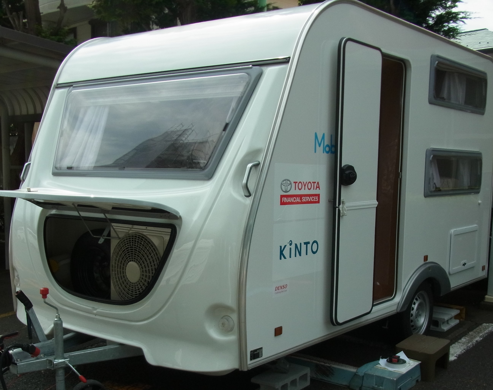
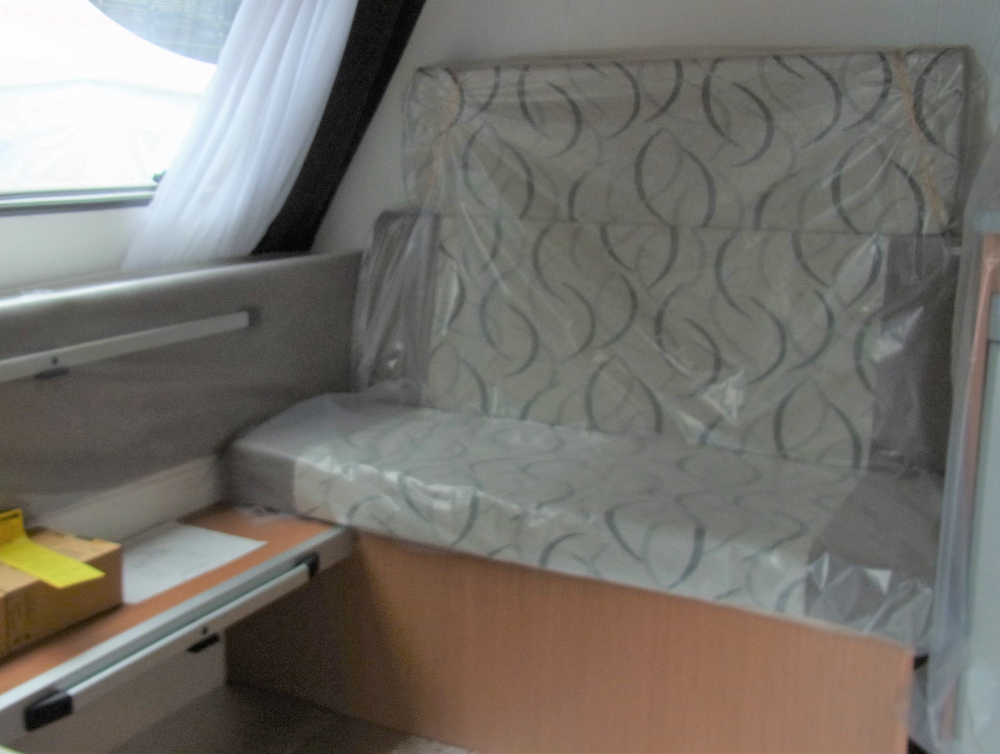
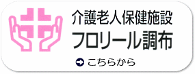
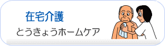

最終更新日 令和7年8月8日

当院は、オンライン資格確認等システムにより取得した診療情報等を活用して
診療を実施しています。
また、マイナ保険証を促進する等、医療DXを通じて質の高い医療を提供できるよう
取り組んでいます。
診療を実施しています。
また、マイナ保険証を促進する等、医療DXを通じて質の高い医療を提供できるよう
取り組んでいます。
問診票
当院では、初診の患者さんには診療の前に問診票をご記入いただいております。
問診票をご記入の上、ご持参いただければ待ち時間の短縮等につながります。
受診される診療科の問診票を印刷してご利用ください。
脳神経外科問診票 整形外科問診票 消化器外科・外科問診票 内科問診票
産婦人科問診票 乳腺外来問診票 泌尿器科問診票 禁煙外来問診票
当院では、初診の患者さんには診療の前に問診票をご記入いただいております。
問診票をご記入の上、ご持参いただければ待ち時間の短縮等につながります。
受診される診療科の問診票を印刷してご利用ください。
脳神経外科問診票 整形外科問診票 消化器外科・外科問診票 内科問診票
産婦人科問診票 乳腺外来問診票 泌尿器科問診票 禁煙外来問診票
- 【東京都無痛分娩費用 費用の概算金額について】 2025年8月8日
2025年10月より、「東京都無痛分娩費用助成等事業」が開始されます。
助成開始に伴い、費用の概算金額は入院管理料を含めた金額表示となります。
詳しくはこちらをご覧ください。
- 【東京都無痛分娩費用の助成について】 2025年7月10日
調布病院は、東京都無痛分娩費用助成事業の対象医療機関になりました。
東京都では、希望する方が安心して無痛分娩を選択できるよう、要件を満たした都民の方を対象に無痛分娩に要した費用（最大１０万円）を助成する事業を、令和７年１０月１日以降に出産した方を対象に始めます。
事業の詳細や申請方法は、こちらをご覧ください。
- 【マイナ保険証の利用登録に関するお知らせ】 2025年5月22日
令和6年12月2日以降、新しい保険証の発行が停止され、マイナ保険証を使って医療機関にかかる仕組みとなりました。
また、従来の保険証のお持ちの方についても、経過措置による保険証の有効期限が今後訪れます。
すみやかにマイナ保険証の準備をし、マイナ保険証の利用への切り替えをお願いします。
保険証の有効期限が満了する方へ（動画） 資格確認書の交付対象となる方へ（動画）
- 【最新式マンモグラフィ装置の導入お知らせ】 2025年4月15日
従来の装置と比較して、短時間・低線量での撮影が可能になりました。
当院はマンモグラフィ認定技師が常勤しており、検査は女性技師が担当します。
最新式マンモグラフィ装置の導入お知らせ 乳腺外来のご案内
- 【立ち会い分娩及び産後面会について】 2025年3月31日
日頃より感染対策にご協力いただきありがとうございます。
令和7年4月1日より、立ち会い分娩及び産後面会の内容を変更いたします。
詳細はこちらをご覧ください。
- 【売店営業時間の変更のお知らせ】 2024年7月17日
平日・土曜 9：00〜13：00
定休日 日曜・祝日
となります。
カップ麺やパン、その他お菓子等は売店隣の『食品自販機』にてお買い求めください。
その他ご要望がございましたら、売店スタッフ及びロビーにいる案内係へお伝えください。
- 【面会制限緩和のお知らせ】 2024年3月28日
日頃より感染対策にご協力いただき、誠にありがとうございます。
令和6年4月1日より、面会制限を緩和いたします。
詳しくはこちらをご覧ください。
ご不明な点がございましたら、スタッフにお問い合わせください。
今後とも、ご理解・ご協力のほどよろしくお願いいたします。
- 【正面玄関の開錠及び施錠時間の変更について】 2023年12月15日
令和5年12月15日（金）より、以下のとおり変更いたします。
開場時間 8時30分 → 8時00分
施錠時間 16時00分 → 20時00分 - 【地域包括ケア病床開始のお知らせ】 2023年9月1日
４月より閉じていた地域包括ケア病床を、９月より新たに２１床で開始します。
- 【Ｗｅｂ診療予約開始のお知らせ】 2023年8月1日
８月１日よりＷｅｂによる診療予約を始めました。
詳しくはこちらから。
- 【発熱などによる受診についてのお願い】 2023年5月10日
発熱などで受診する際は、事前にご連絡の上ご来院くださるようお願いします。
東京都からの新型コロナ5類移行後のリーフレットはこちらから。
- 【サージカルマスク装着のご協力のお願い】
東京都内で新型コロナ感染者数が急増し、第7波が始まっております。
当院ではさらに感染対策を強化し、原則として、院内ではサージカルマスク（不織布マスク）の着用をお願いいたします。（ウレタンマスク・布マスクはお控えください。）
又、マスクを外しての会話や、飲食しながらの会話をお控えくださいますようお願いいたします。
ご不便をおかけいたしますが、皆様のご理解・ご協力をよろしくお願いいたします。
2022年7月12日 調布病院感染対策委員会
- 2025年08月06日 消化器外科外来からのお知らせ
外来診療変更 10月4日（土）午前 野内医師休診
外来診療変更 12月6日（土）午前 野内医師休診
- 2025年08月05日 泌尿器科外来からのお知らせ
外来診療変更 9月26日（金）終日 冨田医師休診
- 2025年07月29日 循環器内科外来からのお知らせ
外来診療変更 9月26日（金）午前 木村医師休診
- 2025年07月28日 広報誌「桐」４０号を発行しました。
- 2025年07月22日 産婦人科外来からのお知らせ
外来診療変更 8月13日（水）午前 小洗医師→代診梅崎医師
外来診療変更 8月15日（金）午前 倉田医師（1診）
- 2025年07月22日 脳神経外科外来からのお知らせ
外来診療変更 10月30日（木）午前 大橋医師休診
- 2025年07月16日 整形外科外来からのお知らせ
外来診療変更 7月23日（水）午前 五十嵐医師→代診中川医師又は藤井医師
外来診療変更 7月25日（金）午前 五十嵐医師→代診中川医師又は藤井医師
- 2025年07月4日 消化器外科外来からのお知らせ
外来診療変更 7月5日（土）午前 野内医師休診
外来診療変更 7月14日（月）午前 外川医師休診
- 2025年07月4日 脳神経外科外来からのお知らせ
外来診療変更 9月12日（金） 小野田医師休診
- 2025年07月4日 脳神経内科外来からのお知らせ
外来診療変更 10月4日（土）午前 高橋医師休診
- 2025年06月24日 産婦人科外来からのお知らせ
当分の間、山田医師の診察は休診となります。ご了承ください。
- 2025年06月23日 消化器外科外来からのお知らせ
外来診療変更 7月2日（水）午後 外川医師休診
- 2025年06月23日 乳児検診外来からのお知らせ
外来診療変更 7月15日（火）午後 山崎医師休診 →7月1日（火）午後に変更
外来診療変更 8月12日（火）午後 山崎医師休診 →8月5日（火）午後に変更
- 2025年06月11日 腎臓内科外来からのお知らせ
外来診療変更 7月4日（金）午後 柿沼医師休診
外来診療変更 8月15日（金）午後 柿沼医師休診
- 2025年06月06日 乳腺外科外来休止のお知らせ
7月1日より火曜日（第2・第4）午後の乳腺外科外来は休止といたします。
- 2025年06月04日 産婦人科外来からのお知らせ
外来診療変更 6月5日（木）午前 山田医師→代診倉田医師
- 2025年06月03日 一般内科外来からのお知らせ
外来診療変更 6月4日（水）午後 本田医師→代診清水医師
- 2025年05月26日 消化器外科外来からのお知らせ
外来診療変更 6月2日（月）午前 外川医師休診
外来診療変更 6月3日（火）午後 外川医師休診
外来診療変更 6月4日（水）午後 外川医師休診
- 2025年05月02日 循環器内科外来からのお知らせ
外来診療変更 5月30日（金）午前 木村医師休診
- 2025年05月02日 一般内科外来からのお知らせ
外来診療変更 11月22日（土）午前 片倉医師休診
- 2025年04月30日 広報誌「桐」３９号を発行しました。
- 2025年04月23日 整形外科外来からのお知らせ
外来診療変更 5月7日（水）午前 森井医師休診
外来診療変更 7月16日（水）午前 森井医師休診
外来診療変更 7月23日（水）午前 森井医師休診
- 2025年04月15日
【新型コロナウイルス感染者発生のお知らせ第2報】
4月15日までに新たな発熱者・感染者は出ておりません。
施設内感染者が0名となりましたので、終息宣言といたします。
今後の予定として4月16日水曜日から面会再開といたします。
また洗濯物の受け渡しは3階ステーションにて対応いたします。
皆様方にはご心配をおかけいたしました。引き続き感染対策を徹底してまいります。
今後ともどうぞよろしくお願いいたします。
2025年4月15日 介護老人保健施設フロリール調布 施設長 増田 浩 - 2025年04月15日 最新式マンモグラフィ装置の導入お知らせ
乳腺外来のご案内
- 2025年04月14日 消化器外科外来からのお知らせ
外来診療変更 6月20日（金）午後 野内医師休診
- 2025年04月09日 産婦人科外来診療変更のお知らせ
4月30日より外来担当医が変更となります。
- 2025年04月07日
【新型コロナウイルス感染者発生のお知らせ第1報】
〇4月5日、フロリール調布通の入所利用者3名が新型コロナウイルス感染症に感染していることが判明いたしました。3名とも軽症であるため、施設内で療養中です。
〇4月6日、ご利用者1名の感染確認しております。軽症のため施設内療養中です。
〇4月7日、ご利用者3名の感染確認をしております。3名とも軽症のため施設内療養をしております。
以上のことから感染症が流行していると判断し、多摩府中保健所に連絡し、現状の対応で継続するようご指示を頂戴しております。
また、感染症が落ち着くまでは以下の内容を、ご家族様にご協力願いたいと思います。
① 面会はご遠慮いただけますと幸いです。オンラインでのご面会は可能ですので、お申し込みの方は042-484-2627までご連絡ください。
② お洗濯物の受け渡しは1階事務所にて行います。大変お手数ではございますが、1階受付の呼び出しボタンをお押しください。営業時間外17：15〜翌朝8：45までは調布病院当直担当者がおりますのでお声掛けくださいますようお願いします。
また、新しい情報が入りましたら、速やかに公表してまいります。
皆様方にはご心配をおかけいたしますが、ご理解賜りますようよろしくお願いいたします。
2025年4月7日 介護老人保健施設フロリール調布 施設長 増田 浩 - 2025年04月7日 脳神経内科外来からのお知らせ
外来診療変更 5月24日（土）午前 高橋医師休診
- 2025年04月7日 一般内科外来からのお知らせ
外来診療変更 4月7日（月）午後 本田医師→代診清水医師（腎臓内科休診）
- 2025年04月3日 呼吸器内科外来からのお知らせ
外来診療変更 8月8日（金）午前 鳥羽医師→代診清水医師
外来診療変更 8月15日（金）午前 鳥羽医師→代診清水医師
- 2025年03月27日 産婦人科外来からのお知らせ
外来診療変更 4月19日（土）午前 予約外受付11:30迄
- 2025年03月18日 4月1日より外来診療担当医師一覧表が変更になります。
- 2025年03月18日 産婦人科外来からのお知らせ
外来診療変更 4月8日（火）午前 梅﨑医師→代診山田医師
- 2025年03月15日 消化器外科外来からのお知らせ
外来診療変更 4月11日（金）午後 野内医師休診
外来診療変更 4月12日（土）午前 野内医師休診
外来診療変更 5月2日（金）午後 野内医師休診
- 2025年03月15日 消化器外科外来からのお知らせ
外来診療変更 3月21日（金）午前 外川医師→代診野内医師
外来診療変更 3月31日（月）午前 外川医師休診
- 2025年02月26日 産婦人科外来からのお知らせ
外来診療変更 3月28日（金）午前 小洗医師（1診）
- 2025年02月25日
【面会禁止解除のお知らせ】
入院患者様ご家族様
コロナウィルス感染症の院内感染による面会禁止を本日より解除いたします。
面会禁止期間中のご理解とご協力、誠にありがとうございました。
2025年2月25日 調布病院院長 山田 亜矢 - 2025年02月21日 一般内科外来からのお知らせ
外来診療変更 5月24日（土）午前 片倉医師休診
- 2025年02月12日
【面会禁止のお知らせ】
入院患者様ご家族様
コロナウィルス感染症の院内感染が発生しておりますため、本日より当面の間、
面会禁止にいたします。
皆様にはご迷惑ご心配をおかけいたしますが、ご協力のほどよろしくお願いいたします。
2025年2月12日 調布病院院長 山田 亜矢 - 2025年02月04日 産婦人科外来からのお知らせ
外来診療変更 3月19日（水）午前 梅崎医師→代診山田医師
- 2025年02月04日 産婦人科外来からのお知らせ
外来診療変更 2月22日（金）午前 梅崎医師→代診小洗医師
- 2025年01月31日 広報誌「桐」３８号を発行しました。
- 2025年01月31日 糖尿病内科外来からのお知らせ
外来診療変更 2月21日（金）午後 近藤医師休診
外来診療変更 3月28日（金）午後 近藤医師休診
- 2025年01月31日 整形外科外来からのお知らせ
外来診療変更 2月1日（土）午前 五十嵐医師→代診藤井医師
外来診療変更 2月8日（土）午前 藤井医師→代診五十嵐医師
- 2025年01月23日 脳神経外科外来からのお知らせ
外来診療変更 3月5日（水）午前 原岡医師休診
外来診療変更 3月19日（水）午前 原岡医師休診
- 2024年12月23日 乳腺外科外来診療開始時間変更のお知らせ
1月20日以降 松本医師 10時診療開始
- 2024年12月23日 1月1日より外来診療担当医師一覧表が変更になります。
- 2024年12月12日 消化器外科外来からのお知らせ
外来診療変更 12月20日（金）午前 外川医師→代診野内医師
外来診療変更 1月24日（金）午後 野内医師→代診外川医師
- 2024年12月09日 一般競争入札の実施について
個人防護具保管庫整備工事 - 2024年12月09日 脳神経外科外来開始のお知らせ
1月9日より木曜日午前の脳神経外科外来を開始いたします
- 2024年12月02日 産婦人科外来からのお知らせ
外来診療変更 1月25日（土）午前 倉田医師→代診山田医師
- 2024年12月02日 年末年始の診療のお知らせ
- 2024年11月29日 一般競争入札の実施について
簡易型陰圧装置 全自動遺伝子解析装置 - 2024年11月25日 糖尿病内科外来からのお知らせ
外来診療変更 2月21日（金）午後 近藤医師休診
- 2024年11月18日 乳腺外科外来からのお知らせ
外来診療変更 12月2日（月）終日、12月9日（月）午後、3月3日（月）午後、3月31日（月）終日 松本医師 休診
- 2024年11月11日 産婦人科外来からのお知らせ
外来診療変更 11月28日（木）午前 山田医師→代診倉田医師
- 2024年11月08日 インフルエンザ予防接種のお知らせ
- 2024年11月06日
【コインランドリーの場所の変更のお知らせ】
当院コインランドリーを２階へと変更いたしました。
ご利用の際は２階のドラム式洗濯機をご利用ください。
詳しくはこちらをご確認ください。 - 2024年10月29日 産婦人科外来からのお知らせ
外来診療変更 12月2日（月）午前 倉田医師休診
- 2024年10月25日 一般競争入札の実施について
超音波診断装置 インファウォーマ ベッドサイドモニタ
生体情報モニタ 人工呼吸器 生化学分析装置 - 2024年10月24日 広報誌「桐」３７号を発行しました。
- 2024年10月09日
【ＨＰＶワクチン初回接種をご希望の皆様へ】
現在ＨＰＶワクチンの入荷がないため、しばらくの間、新規予約受付を中止させていただいております。 - 2024年09月27日 消化器外科外来からのお知らせ
外来診療変更 11月2日（土）午前 野内医師休診
外来診療変更 1月24日（金）午後 野内医師→代診外川医師
- 2024年09月27日 整形外科外来からのお知らせ
外来診療変更 12月7日（土）午前 五十嵐医師→代診藤井医師
外来診療変更 12月14日（土）午前 藤井医師→代診五十嵐医師
- 2024年09月27日 循環器内科外来からのお知らせ
外来診療変更 10月11日（金）午前 木村医師休診
- 2024年09月26日
【東京消防庁「起震車」による地震体験搭乗についてのお知らせ】
当院駐車場にて地震体験訓練を行います。
当院職員のみでなく、患者様やご近所の方も体験可能ですので、是非ともご体験ください。
場所 ： 東京都調布市下石原3-45-1 調布病院駐車場内
日時 ： 令和6年10月31日 14：00〜15：30頃まで
※体験当日は東京消防庁職員による監視・指導のもと安全に体験していただけます。 - 2024年09月26日 10月1日より外来診療担当医師一覧表が変更になります。
- 2024年09月04日 呼吸器内科外来からのお知らせ
外来診療変更 10月4日（金）午前 鳥羽医師→代診清水医師
外来診療変更 11月15日（金）午前 鳥羽医師→代診清水医師
外来診療変更 11月22日（金）午前 鳥羽医師→代診清水医師
- 2024年09月04日 産婦人科外来からのお知らせ
外来診療変更 9月27日（金）午後 担当医（1診）
- 2024年08月31日 消化器外科外来からのお知らせ
外来診療変更 10月11日（金）午前 外川医師→代診野内医師
外来診療変更 10月12日（土）午前 外川医師休診
- 2024年08月22日 整形外科外来からのお知らせ
外来診療変更 8月28日（水）午前 森井医師休診
外来診療変更 10月9日（水）午前 森井医師休診
- 2024年08月15日 パンの移動販売についてのお知らせ
令和6年9月よりパンの移動販売が始まります。
詳しくはこちらをご覧ください。
- 2024年08月05日 消化器外科外来からのお知らせ
外来診療変更 8月16日（金）午前 外川医師→代診野内医師
外来診療変更 8月26日（月）午前 外川医師休診
- 2024年08月02日 8月2日より外来診療担当医師一覧表が変更になります。
- 2024年07月29日 整形外科外来からのお知らせ
外来診療変更 9月17日（火）午前 森脇医師休診
- 2024年07月29日 脳神経外科外来からのお知らせ
外来診療変更 8月14日（水）午前 原岡医師休診 - 2024年07月24日 広報誌「桐」３６号を発行しました。
- 2024年07月19日 産婦人科外来からのお知らせ
外来診療変更 11月28日（木）午前 山田医師 11時診療終了
- 2024年07月19日 脳神経内科外来からのお知らせ
外来診療変更 9月21日（土）午前 原医師休診 - 2024年07月16日 産婦人科外来からのお知らせ
外来診療変更 7月18日（木）午前 梅﨑医師休診
外来診療変更 7月25日（木）午前 梅﨑医師 11時診療開始
- 2024年07月02日 産婦人科外来からのお知らせ
外来診療変更 8月14日（水）午前、8月16日（金）午前 小洗医師休診
- 2024年07月01日 乳腺外来からのお知らせ
外来診療変更 7月22日、8月5･19･26日（月）午前 松本医師 9時15分診療開始 - 2024年06月26日 整形外科外来からのお知らせ
外来診療変更 7月10日（水）午前、8月28日（水）午前 森井医師休診
- 2024年06月25日 産婦人科外来からのお知らせ
外来診療変更 9月28日（土）午前 倉田医師→代診山田医師
- 2024年06月25日 消化器外科外来からのお知らせ
外来診療変更 6月28日（金）午前 外川医師→代診野内医師
- 2024年06月24日 産婦人科外来からのお知らせ
外来診療変更 10月2日（水）午前 小洗医師（1診）
外来診療変更 10月3日（木）午前 梅﨑医師（1診）
外来診療変更 10月5日（土）午前 山田医師→代診倉田医師
- 2024年06月24日 泌尿器科外来午前診療開始のお知らせ
8月2日より金曜日午前の泌尿器科外来を開始いたします。
- 2024年06月24日 腎臓内科外来再開のお知らせ
8月2日より金曜日午後の腎臓内科外来を再開いたします。
- 2024年06月20日 整形外科外来からのお知らせ
外来診療変更 6月28日（金）午前 五十嵐医師→担当医
- 2024年06月17日 産婦人科外来からのお知らせ
外来診療変更 6月18日（火）午前 梅﨑医師 休診
- 2024年06月10日 呼吸器内科外来からのお知らせ
外来診療変更 10月4日（金）午前 鳥羽医師→清水医師
- 2024年06月10日 消化器外科外来からのお知らせ
外来診療変更 11月2日（土）午前 野内医師 休診
- 2024年05月23日 産婦人科外来からのお知らせ
外来診療変更 7月3日（水）午前 小洗医師（1診）
- 2024年05月14日 乳腺外来からのお知らせ
外来診療変更 5月27日（月）終日、7月8日（月）午後、7月29（月）終日
10月28日（月）終日、12月2日（月）終日、12月9日（月）午後、3月3日（月）午後
松本医師 休診
- 2024年05月02日 消化器外科外来からのお知らせ
外来診療変更 7月6日（土）午前 野内医師 休診
外来診療変更 8月23日（金）午後 野内医師→外川医師 - 2024年05月02日 5月8日より外来診療担当医師一覧表が変更になります。
- 2024年04月26日 広報誌「桐」３５号を発行しました。
- 2024年04月18日 消化器外科外来からのお知らせ
外来診療変更 4月19日（金）午前 外川医師→野内医師 - 2024年04月18日 乳児検診外来からのお知らせ
外来診療日変更 7月16日→7月2日、8月13日→8月6日 - 2024年04月16日 消化器外科外来からのお知らせ
- 2024年04月15日 内科外来からのお知らせ
- 2024年04月15日 脳神経内科外来からのお知らせ
- 2024年04月15日 脳神経外科外来からのお知らせ
- 2024年04月12日 泌尿器科診療開始時間変更のお知らせ
泌尿器科診療開始時間 13:00〜
13:00〜14:00までの予約の方は、直接受付にお越しください。 - 2024年04月11日 呼吸器内科外来からのお知らせ
- 2024年04月09日 5月8日より脳神経外科の水曜日午後診療を休診といたします
- 2024年04月08日 消化器外科外来からのお知らせ
- 2024年04月02日 乳腺外科外来からのお知らせ
- 2024年04月01日 外来診療担当医師一覧表を変更しました。
- 2024年03月25日 産婦人科外来からのお知らせ
- 2024年03月11日 消化器外科外来からのお知らせ
- 2024年03月08日 産婦人科外来からのお知らせ
- 2024年03月06日 産婦人科外来からのお知らせ
- 2024年03月05日 脳神経外科外来からのお知らせ
- 2024年03月04日 乳腺外科外来からのお知らせ
- 2024年02月27日 整形外科外来からのお知らせ
- 2024年02月21日 内科外来からのお知らせ
- 2024年02月15日 産婦人科外来からのお知らせ
- 2024年02月15日 消化器外科外来からのお知らせ
- 2024年02月09日 広報誌「桐」３４号を発行しました。
- 2024年01月31日 2月1日より外来診療担当医師一覧表が変更になります。
- 2024年01月24日 整形外科外来からのお知らせ
- 2024年01月18日 消化器外科外来からのお知らせ
- 2024年01月10日 消化器外科外来からのお知らせ
- 2024年01月09日 整形外科外来からのお知らせ
- 2024年01月04日 産婦人科外来からのお知らせ
- 2023年12月22日 産婦人科外来からのお知らせ
- 2023年12月15日
【正面玄関の開錠及び施錠時間の変更について】
令和5年12月15日（金）より、以下のとおり変更いたします。
開場時間 8時30分 → 8時00分
施錠時間 16時00分 → 20時00分 - 2023年12月11日 産婦人科外来年始診療体制のお知らせ
- 2023年12月07日 整形外科外来からのお知らせ
- 2023年12月07日 産婦人科外来からのお知らせ
- 2023年12月04日
【面会制限の一部変更について】
日頃より感染対策にご協力いただき、誠にありがとうございます。
令和5年12月4日より、面会制限について一部変更いたしました。
詳しくはこちらをご覧ください。
ご不明な点がございましたら、スタッフにお問い合わせください。
今後とも、ご理解・ご協力のほどよろしくお願いいたします。
2023年12月4日 調布病院院長 山田 亜矢 - 2023年12月01日 消化器外科外来からのお知らせ
- 2023年11月22日 整形外科外来からのお知らせ
- 2023年11月13日 消化器外科外来からのお知らせ
- 2023年11月11日 循環器内科外来からのお知らせ
- 2023年11月07日 呼吸器内科外来からのお知らせ
- 2023年10月31日 外科外来からのお知らせ
- 2023年10月30日 広報誌「桐」３３号を発行しました。
- 2023年10月26日 呼吸器科外来からのお知らせ
- 2023年10月20日 産婦人科外来からのお知らせ
- 2023年10月20日 整形外科外来からのお知らせ
- 2023年10月17日 産婦人科外来からのお知らせ
- 2023年10月11日
【新型コロナウイルス感染者発生のお知らせ第7報（最終報）】
１０月１１日1２時までに新たな感染者は出ておりません。
施設内感染者は10月11日現在で０名となりましたので、終息宣言と致します。
今後の予定として10月16日月曜日から面会再開と致します。
また洗濯物の受け渡しは3階ステーションにて対応いたします。
皆様方にはご心配をおかけいたしました。引き続き感染対策を徹底してまいります。
今後ともどうぞよろしくお願いいたします。
2022年10月11日 介護老人保健施設フロリール調布 施設長 原岡 襄 - 2023年10月10日 産婦人科外来からのお知らせ
- 2023年10月06日
【新型コロナウイルス感染者発生のお知らせ第6報】
１０月６日1２時までに新たな感染者は出ておりません。
施設内感染者は10月６日現在で5名となっております。
重症化に至ったご利用者は0名となっております。
引き続き職員一同感染対策を徹底してまいります。
また、新しい情報が入りましたら、速やかに公表してまいります。
皆様方にはご心配をおかけいたしますが、ご理解賜りますようよろしくお願いいたします。
2022年10月6日 介護老人保健施設フロリール調布 施設長 原岡 襄 - 2023年10月04日
【新型コロナウイルス感染者発生のお知らせ第5報】
１０月４日16時までに新たな感染者は出ておりません。
施設内感染者は10月４日現在で8名となっております。
重症化に至ったご利用者は0名となっております。
引き続き職員一同感染対策を徹底してまいります。
また、新しい情報が入りましたら、速やかに公表してまいります。
皆様方にはご心配をおかけいたしますが、ご理解賜りますようよろしくお願いいたします。
2022年10月4日 介護老人保健施設フロリール調布 施設長 原岡 襄 - 2023年10月03日
【新型コロナウイルス感染者発生のお知らせ第4報】
１０月３日20時までに新たな感染者は出ておりません。
施設内感染者は10月３日現在で1６名となっております。
重症化に至ったご利用者は0名となっております。
また、本日多摩府中保健所の職員の方がお見えになり、施設の感染対策について、「現在の対応で感染の抑え込みができている。引き続き対策をするように」とご助言を頂戴しました。
引き続き職員一同感染対策を徹底してまいります。
また、新しい情報が入りましたら、速やかに公表してまいります。
皆様方にはご心配をおかけいたしますが、ご理解賜りますようよろしくお願いいたします。
2022年10月3日 介護老人保健施設フロリール調布 施設長 原岡 襄 - 2023年10月02日
【新型コロナウイルス感染者発生のお知らせ第3報】
９月３０日に新たにご利用者１名の感染を確認いたしました。
施設内感染者は10月2日現在で19名となっております。
重症化に至ったご利用者は0名となっております。
引き続き感染対策を徹底してまいります。
また、新しい情報が入りましたら、速やかに公表してまいります。
皆様方にはご心配をおかけいたしますが、ご理解賜りますようよろしくお願いいたします。
2022年10月2日 介護老人保健施設フロリール調布 施設長 原岡 襄 - 2023年10月01日 10月1日より外来診療担当医師一覧表が変更になります。
- 2023年09月27日
【新型コロナウイルス感染者発生のお知らせ第2報】
9月26日に新たにご利用者2名の感染を確認いたしました。
重症化に至ったご利用者は0名となっております。
引き続き感染対策を徹底してまいります。
また、新しい情報が入りましたら、速やかに公表してまいります。
皆様方にはご心配をおかけいたしますが、ご理解賜りますようよろしくお願いいたします。
2022年9月27日 介護老人保健施設フロリール調布 施設長 原岡 襄 - 2023年09月27日 インフルエンザワクチン接種のお知らせ
- 2023年09月26日
【新型コロナウイルス感染者発生のお知らせ第1報】
9月20日にフロリール調布内で新型コロナウイルス感染症が発症しました。
皆様へのご報告が遅くなったことお詫びいたします。申し訳ございませんでした。
以下に9/25までの感染者情報を公表いたします。
9月20日、ご利用者2名が感染、職員1名が感染
9月21日、ご利用者4名が感染
9月22日、ご利用者3名が感染
9月23日、ご利用者6名が感染、職員2名が感染
9月24日、ご利用者2名が感染、職員1名が感染
9月25日、ご利用者2名が感染、職員1名が感染
引き続き感染対策を徹底してまいります。
また、新しい情報が入りましたら、速やかに公表してまいります。
皆様方にはご心配をおかけいたしますが、ご理解賜りますようよろしくお願いいたします。
2022年9月26日 介護老人保健施設フロリール調布 施設長 原岡 襄 - 2023年09月26日 糖尿病内科外来からのお知らせ
- 2023年09月22日 消化器外科外来からのお知らせ
- 2023年09月21日 産婦人科外来からのお知らせ
- 2023年09月19日 整形外科外来からのお知らせ
- 2023年09月11日 脳神経外科外来からのお知らせ
- 2023年09月11日 消化器外科外来からのお知らせ
- 2023年09月04日
【外線電話不通のお知らせ】
本日17:30〜18:00の30分間、電話交換機修理のため外線電話が不通になります。
ご迷惑をおかけいたしますが、予めご了承ください。 - 2023年09月04日 整形外科外来からのお知らせ
- 2023年09月04日 一般・腎臓内科外来からのお知らせ
- 2023年09月01日 9月1日より外来診療担当医師一覧表が変更になります。
- 2023年09月01日 一般・腎臓内科外来からのお知らせ
- 2023年09月01日 一般・呼吸器内科外来からのお知らせ
- 2023年09月01日
【2階病棟面会中止の解除について】
2階病棟の面会中止は本日、解除いたしました。
8月21日以前の規定通り、一人の患者様に、1週間に3回まで、1回2人まで、30分以内の面会になります。
今後とも、ご理解・ご協力のほどお願いいたします。
2023年9月1日 調布病院院長 山田 亜矢 - 2023年08月29日 脳神経外科外来からのお知らせ
- 2023年08月25日 消化器外科外来からのお知らせ
- 2023年08月24日 消化器外科外来からのお知らせ
- 2023年08月24日 一般・呼吸器内科外来からのお知らせ
- 2023年08月21日 脳神経内科外来からのお知らせ
- 2023年08月21日
【面会について】
2階病棟に入院中の患者様より新型コロナ感染症が発生いたしましたため、当面の間、2階病棟に限り面会を中止いたします。
皆様にはご迷惑ご心配をおかけいたしますが、ご協力のほどよろしくお願いいたします。
2023年8月21日 調布病院院長 山田 亜矢 - 2023年08月18日 消化器外科外来からのお知らせ
- 2023年08月18日 一般・呼吸器内科外来からのお知らせ
- 2023年08月08日 産婦人科外来からのお知らせ
- 2023年08月01日
【Ｗｅｂ診療予約開始のお知らせ】
８月１日よりＷｅｂによる診療予約を始めました。
詳しくはこちらから。
- 2023年08月01日 整形外科外来からのお知らせ
- 2023年07月31日 産婦人科外来からのお知らせ
- 2023年07月30日 広報誌「桐」３２号を発行しました。
- 2023年07月28日 循環器内科外来からのお知らせ
- 2023年07月18日 脳神経内科外来からのお知らせ
- 2023年07月10日 消化器外科外来からのお知らせ
- 2023年07月10日 整形外科外来からのお知らせ
- 2023年07月07日 消化器外科外来からのお知らせ
- 2023年06月29日 産婦人科外来からのお知らせ
- 2023年06月29日 一般・腎臓内科外来からのお知らせ
- 2023年06月26日 産婦人科外来からのお知らせ
- 2023年06月23日 消化器外科外来からのお知らせ
- 2023年06月23日 脳神経外科外来からのお知らせ
- 2023年06月13日 消化器外科外来からのお知らせ
- 2023年06月09日 消化器外科外来からのお知らせ
- 2023年05月30日
【送迎車両変更のお知らせ】
今まで緑色のバスで送迎の運行をしてきましたが、６月より車両が代わり白いハイエースで運行します。
詳しくはこちらから。 - 2023年05月29日 循環器内科外来からのお知らせ
- 2023年05月29日 整形外科外来からのお知らせ
- 2023年05月29日 産婦人科外来からのお知らせ
- 2023年05月29日 事務系女性職員制服廃止のお知らせ
- 2023年05月10日
【発熱などによる受診についてのお願い】
発熱などで受診する際は、事前にご連絡の上ご来院くださるようお願いします。
東京都からの新型コロナ5類移行後のリーフレットはこちらから。 - 2023年04月27日 消化器外科外来からのお知らせ
- 2023年04月24日 整形外科外来からのお知らせ
- 2023年04月21日 広報誌「桐」３１号を発行しました。
- 2023年04月14日 脳神経外科外来からのお知らせ
- 2023年04月14日 循環器内科外来からのお知らせ
- 2023年04月13日 一般内科外来からのお知らせ
- 2023年04月12日 脳神経外科外来からのお知らせ
- 2023年04月07日 乳腺外科外来からのお知らせ
- 2023年04月03日 消化器外科外来からのお知らせ
- 2023年03月31日 4月1日より外来診療担当医師一覧表が変更になります。
- 2023年03月31日 一般・呼吸器内科外来からのお知らせ
- 2023年03月31日 整形外科受付時間変更のお知らせ
- 2023年03月23日 循環器内科外来からのお知らせ
- 2023年03月08日 糖尿病内科外来からのお知らせ
- 2023年03月06日 循環器内科外来から変更のお知らせ
- 2023年02月28日 糖尿病内科外来からのお知らせ
- 2023年02月20日 消化器外科外来からのお知らせ
- 2023年02月13日 消化器外科外来からのお知らせ
- 2023年02月13日 泌尿器科外来からのお知らせ
- 2023年02月01日 消化器外科外来からのお知らせ
- 2023年01月31日 脳神経外科外来からのお知らせ
- 2023年01月31日 産婦人科外来からのお知らせ
- 2023年01月27日
【新型コロナ感染者発生のお知らせ 第5報】
1月23日をもちまして、新型コロナ感染症の経過観察が終了いたしました。
その後本日に至るまで新たな感染者は発生しておりません。
面会は、2月1日（水）より一部再開いたします。
一般の面会及び産後の面会についての詳細はこちらをご覧ください。
皆様には大変ご迷惑ご心配をおかけいたしました。ご協力ありがとうございました。
今後とも感染対策へのご理解ご協力のほどよろしくお願いいたします。
2023年1月27日 調布病院院長 山田 亜矢 - 2023年01月20日
【新型コロナ感染者発生のお知らせ 第4報】
1月13日までに新たに患者さん3名、1月15日までに新たに職員2名が新型コロナ感染症と診断されました。その後の発生はございません。
保健所と相談しながら、職員一同全力を挙げて感染対策に努めてまいります。
新しい情報が入り次第、随時公表してまいります。
面会制限など、皆様には大変ご迷惑ご心配をおかけいたしますが、今しばらくご理解ご協力のほどよろしくお願いいたします。
2023年1月20日 調布病院院長 山田 亜矢 - 2023年01月18日 脳神経外科外来からのお知らせ
- 2023年01月14日 広報誌「桐」３０号を発行しました。
- 2023年01月12日
【新型コロナ感染者発生のお知らせ 第3報】
1月11日までに新たに患者さん5名、職員3名（院内感染以外も含む）が新型コロナ感染症と診断されました。
保健所と相談しながら、職員一同全力を挙げて感染対策に努めてまいります。
新しい情報が入り次第、随時公表してまいります。
皆様にはご心配をおかけしますが、ご理解ご協力のほどよろしくお願いいたします。
2023年1月12日 調布病院院長 山田 亜矢 - 2023年01月11日 産婦人科外来からのお知らせ
- 2023年01月06日
【新型コロナ感染者発生のお知らせ 第2報】
本日までに新たに患者さん8名、職員5名が新型コロナ感染症と診断されました。
保健所と相談しながら、職員一同全力を挙げて感染対策に努めてまいります。
新しい情報が入り次第、随時公表してまいります。
皆様にはご心配をおかけしますが、ご理解ご協力のほどよろしくお願いいたします。
2023年1月6日 調布病院院長 山田 亜矢 - 2023年01月06日 1月10日（火）より産婦人科外来担当医師が変更になります。
- 2023年01月04日 【自動音声案内時間変更のお知らせ】
自動音声案内の時間が変更になり、下記のようになります。
平日 ８：３０〜１７：００
土曜 ８：３０〜１３：００
日曜・祝日は、音声案内はありません。 - 2023年01月02日
【新型コロナ感染者発生のお知らせ 第1報】
令和5年1月2日、入院患者さん6名の計10名が新型コロナウイルス感染症と診断されました。
保健所と相談しながら、職員一同全力を挙げて感染対策に努めてまいります。
新しい情報が入り次第、随時公表してまいります。
皆様にはご心配をおかけしますが、ご理解ご協力のほどよろしくお願いいたします。
2023年1月2日 調布病院院長 山田 亜矢 - 2022年12月26日 産婦人科外来からのお知らせ
- 2022年12月21日 消化器外科外来からのお知らせ
- 2022年12月19日 糖尿病内科外来からのお知らせ
- 2022年12月12日 産婦人科外来からのお知らせ
- 2022年12月07日 12月12日より外来診療担当医師一覧表が変更になります。
- 2022年12月07日 【年末年始の診療のお知らせ】
１２月３０日（金）〜１月３日（火）まで、一般外来は休診、救急外来のみです。
発熱外来は、１２月３０日、１月２日です。受付時間は、８時４５分〜１５時。
１２月３０日は、休日診療当番日です。診療時間は、９時〜１７時、整形外科です。
詳しくは、こちらから。
- 2022年12月02日 循環器内科外来診療変更のお知らせ
- 2022年11月30日 消化器外科外来診療変更のお知らせ
- 2022年11月25日 産婦人科外来診療変更のお知らせ
- 2022年11月15日 産婦人科外来診療変更のお知らせ
- 2022年11月15日 脳神経外科外来診療変更のお知らせ
- 2022年11月10日 消化器外科外来診療変更のお知らせ
- 2022年11月08日 広報誌「桐」２９号を発行しました。
- 2022年11月07日 産婦人科外来診療変更のお知らせ
- 2022年11月05日 消化器外科外来診療変更のお知らせ
- 2022年10月27日 整形外科外来担当医変更のお知らせ
- 2022年10月27日 11月からの外来診療担当医師一覧表の変更のお知らせ
- 2022年10月21日 消化器外科外来担当医変更のお知らせ
- 2022年10月21日 循環器内科外来担当医変更のお知らせ
- 2022年10月19日 消化器外科外来担当医変更のお知らせ
- 2022年10月17日 産婦人科外来担当医変更のお知らせ
- 2022年10月13日 消化器外科外来担当医変更のお知らせ
- 2022年10月11日 災害拠点病院等自家発電設備等強化事業一般競争入札の実施に関して
（自家発電設備更新工事・受水槽設備更新工事） - 2022年10月06日 消化器外科外来担当医変更のお知らせ２
- 2022年10月06日 消化器外科外来担当医変更のお知らせ１
- 2022年10月04日 消化器外科外来担当医変更のお知らせ
- 2022年10月01日 外来診療担当医師一覧表変更のお知らせ
- 2022年09月21日 インフルエンザ予防接種のお知らせ
- 2022年09月20日
【オミクロン株対応ワクチンについて】
10月4日(火)より
４回目の接種の方はオミクロン株対応ワクチンの接種となります。
- 2022年09月20日 循環器内科外来担当医変更のお知らせ
- 2022年09月20日 消化器外科外来担当医変更のお知らせ
- 2022年09月20日 産婦人科外来担当医変更のお知らせ
- 2022年09月09日
【医療連携室でメールでの各種相談受付を始めました】
連携室メールアドレス msw(at)tokokai.or.jp ※(at)は@に置き換えてください。
- 2022年09月07日 消化器外科外来担当医変更のお知らせ
- 2022年09月05日 産婦人科外来担当医変更のお知らせ
- 2022年09月03日
【新型コロナウイルス感染者発生のお知らせ フロリール調布 第11報 最終報】
第10報でのお知らせ以後、施設内での感染者が出ていないため、収束したと判断しております。
引き続き感染対策を徹底し、職員一同全力で事業所運営に努めてまいります。
2022年9月3日 介護老人保健施設フロリール調布 施設長 原岡 襄 - 2022年09月02日
【面会及び立ち会い分娩再開について】
R4年7月より中止しておりました面会及び立ち会い分娩を、9月5日（月）9：00より再開いたします。
面会をご希望の方は、必ずこちらの面会についてをご確認ください。
立ち会い分娩・産後の面会については、産婦人科外来までお問い合わせください。
また、ZOOMによるオンライン面会は引き続き行いますので、ご利用ください。
2022年9月2日 調布病院院長 山田 亜矢 - 2022年08月26日
【新型コロナウイルス感染者発生のお知らせ フロリール調布 第10報】
8月25日、フロリール調布の職員1名が新型コロナウイルス感染症に感染していることが判明いたしました。濃厚接触者に該当する方はいません。
引き続き感染対策を徹底してまいります。
また、新しい情報が入りましたら、速やかに公表してまいります。
皆様方にはご心配をおかけいたしますが、ご理解賜りますようよろしくお願いいたします
2022年8月26日 介護老人保健施設フロリール調布 施設長 原岡 襄 - 2022年08月25日 9月5日より外来診療担当医師一覧表が変更になります。
- 2022年08月23日 消化器外科外来担当医変更のお知らせ
- 2022年08月22日 産婦人科外来担当医変更のお知らせ
- 2022年08月22日
【新型コロナウイルス感染者発生のお知らせ フロリール調布 第9報】
8月18日、フロリール調布の職員1名が新型コロナウイルス感染症に感染していることが判明いたしました。濃厚接触者に該当する方はいません。
引き続き感染対策を徹底してまいります。
また、新しい情報が入りましたら、速やかに公表してまいります。
皆様方にはご心配をおかけいたしますが、ご理解賜りますようよろしくお願いいたします。
2022年8月22日 介護老人保健施設フロリール調布 施設長 原岡 襄 - 2022年08月18日 一般・呼吸器内科外来担当医変更のお知らせ
- 2022年08月16日 循環器内科外来担当医変更のお知らせ
- 2022年08月15日 神経内科外来担当医変更のお知らせ
- 2022年08月15日 呼吸器内科外来担当医変更のお知らせ
- 2022年08月15日 消化器外科外来担当医変更のお知らせ
- 2022年08月12日
【新型コロナウイルス感染者発生のお知らせ 第6報 最終報】
8月4日に検査をした患者さん2名の陽性か判明しましたが、その後の感染拡大はありません。
職員につきましては、多部署にて新たに4名の感染が判明しておりますが、いずれも家庭内感染等で、院内に濃厚接触者に該当する方はいません。
本日、院内感染による新たな陽性者の発生はなく、クラスターの収束を確認いたしました。
面会・立会分娩などにつきましては、第7波の感染者数もまだ減少しておりませんので、引き続き制限を継続いたします。
皆様方にはご心配・ご不便をおかけいたしますが、ご理解・ご協力のほど今後ともよろしくお願いいたします。
2022年8月12日 調布病院院長 山田 亜矢 - 2022年08月10日
【新型コロナウイルス感染者発生のお知らせ フロリール調布 第8報】
8月10日、新たにフロリール調布通所リハビリテーションの利用者1名が新型コロナウイルス感染症に感染していることが判明いたしました。濃厚接触者に該当する方はいませんでした。
引き続き感染対策を徹底してまいります。
また、新しい情報が入りましたら、速やかに公表してまいります。
皆様方にはご心配をおかけいたしますが、ご理解賜りますようよろしくお願いいたします。
2022年8月10日 介護老人保健施設フロリール調布 施設長 原岡 襄 - 2022年08月09日
【新型コロナウイルス感染者発生のお知らせ 調布訪問看護ステーション 最終報】
第1報でお知らせした件ですが、以後事業者内及びご利用者に感染者は出ていないため、収束したと判断しております。
引き続き感染対策を徹底し、職員一同全力で事業所運営に努めてまいります。
2022年8月9日 調布訪問看護ステーション 所長 鷺坂 実豊子 - 2022年08月08日 一般・腎臓内科外来担当医変更のお知らせ
- 2022年08月08日 消化器外科外来担当医変更のお知らせ
- 2022年08月08日 産婦人科外来からのお知らせ１ お知らせ２
- 2022年08月05日
【新型コロナウイルス感染者発生のお知らせ 第5報】
7/29のお知らせ以降本日までに、新たに当院職員3名（院内感染以外も含む）・入院患者さん3名が新型コロナウイルス感染症と診断されました。
保健所と相談しながら、職員一同全力を挙げて感染対策に努めてまいります。
新しい情報が入り次第、随時公表してまいります。
皆様にはご心配をおかけしますが、ご理解ご協力のほどよろしくお願いいたします。
2022年8月5日 調布病院院長 山田 亜矢 - 2022年08月05日 産婦人科外来担当医変更のお知らせ
- 2022年08月05日 消化器外科外来休診のお知らせ
- 2022年08月03日
【新型コロナウイルス感染者発生のお知らせ 調布訪問看護ステーション 第1報】
8月2日、調布訪問看護ステーションリハビリ職員1名が新型コロナウイルス感染症に感染していることが判明いたしました。濃厚接触者に該当する方はいませんでした。
引き続き感染対策を徹底してまいります。
また、新しい情報が入りましたら、速やかに公表してまいります。
皆様方にはご心配をおかけいたしますが、ご理解賜りますようよろしくお願いいたします。
2022年8月3日 調布訪問看護ステーション 所長 鷺坂 実豊子 - 2022年08月03日
【産婦人科外来休止のお知らせ】
８月４日（木）、８月８日（月）の産婦人科外来は、都合により休止となります。
既にご予約をされている方のみとなりますので予めご了承ください。
ご迷惑をおかけしますがよろしくお願いいたします。 - 2022年08月03日
8月3日及び8月4日、産婦人科外来は急遽、予約外の診察を休診とさせていただきます。 - 2022年08月02日
【新型コロナウイルス感染者発生のお知らせ フロリール調布 第7報】
8月1日、フロリール調布通所リハビリテーションの職員1名が新型コロナウイルス感染症に感染していることが判明いたしました。家庭内感染のため濃厚接触者はおりません。
引き続き感染対策を徹底してまいります。
また、新しい情報が入りましたら、速やかに公表してまいります。
皆様方にはご心配をおかけいたしますが、ご理解賜りますようよろしくお願いいたします。
2022年8月2日 介護老人保健施設フロリール調布 施設長 原岡 襄 - 2022年08月01日 整形外科担当医変更のお知らせ
- 2022年07月29日
【新型コロナウイルス感染者発生のお知らせ 第4報】
7/28までに新たに当院職員10名（院内感染以外も含む）・入院患者さん8名が新型コロナウイルス感染症と診断されました。
保健所と相談しながら、職員一同全力を挙げて感染対策に努めてまいります。
新しい情報が入り次第、随時公表してまいります。
皆様にはご心配をおかけしますが、ご理解ご協力のほどよろしくお願いいたします。
2022年7月29日 調布病院院長 山田 亜矢 - 2022年07月27日
【発熱外来、コロナワクチン接種の予約について】
発熱外来、コロナワクチン接種の予約は、朝９時からお受けしております。
９時前の受付はできませんので予めご了承の程、お願いいたします。 - 2022年07月26日
【新型コロナウイルス感染者発生のお知らせ フロリール調布 第6報】
7月25日、新たにフロリール調布通所リハビリテーションの利用者1名が新型コロナウイルス感染症に感染していることが判明いたしました。第4報では濃厚接触者には該当しませんでしたが、送迎車内での感染も否定できません。今回の感染での濃厚接触者に該当する方はいませんでした。
引き続き感染対策を徹底してまいります。
また、新しい情報が入りましたら、速やかに公表してまいります。
皆様方にはご心配をおかけいたしますが、ご理解賜りますようよろしくお願いいたします。
2022年7月26日 介護老人保健施設フロリール調布 施設長 原岡 襄 - 2022年07月25日
【新型コロナウイルス感染者発生のお知らせ フロリール調布 第5報】
7月23日、フロリール調布事務職員1名が新型コロナウイルス感染症に感染していることが判明いたしました。感染経路は不明ですが、施設内で濃厚接触者はおりません。
引き続き感染対策を徹底してまいります。
また、新しい情報が入りましたら、速やかに公表してまいります。
皆様方にはご心配をおかけいたしますが、ご理解賜りますようよろしくお願いいたします。
2022年7月25日 介護老人保健施設フロリール調布 施設長 原岡 襄 - 2022年07月22日
【新型コロナウイルス感染者発生のお知らせ フロリール調布 第4報】
7月21日、新たにフロリール調布通所リハビリテーションの利用者1名が新型コロナウイルス感染症に感染していることが判明いたしました。家庭内感染であり、施設内で濃厚接触者に該当する方はいませんでした。
引き続き感染対策を徹底してまいります。
また、新しい情報が入りましたら、速やかに公表してまいります。
皆様方にはご心配をおかけいたしますが、ご理解賜りますようよろしくお願いいたします。
2022年7月22日 介護老人保健施設フロリール調布 施設長 原岡 襄 - 2022年07月22日
【新型コロナウイルス感染者発生のお知らせ 第3報】
7/21までに新たに当院職員5名・入院患者さん（4階病棟・療養病棟）6名の計11名が新型コロナウイルス感染症と診断されました。
保健所と相談しながら、職員一同全力を挙げて感染対策に努めてまいります。
新しい情報が入り次第、随時公表してまいります。
皆様にはご心配をおかけしますが、ご理解ご協力のほどよろしくお願いいたします。
2022年7月22日 調布病院院長 山田 亜矢 - 2022年07月21日
【新型コロナウイルス感染者発生のお知らせ フロリール調布 第3報】
第1報でお伝えした濃厚接触者の対応は本日付で解除になり、他に感染者は出ておりません。また、第2報の職員に関しましては自宅療養中です。
引き続き感染対策を徹底してまいります。
また、新しい情報が入りましたら、速やかに公表してまいります。
皆様方にはご心配をおかけいたしますが、ご理解賜りますようよろしくお願いいたします。
2022年7月21日 介護老人保健施設フロリール調布 施設長 原岡 襄 - 2022年07月20日 整形外科担当医変更のお知らせ
- 2022年07月20日
【新型コロナウイルス感染者発生のお知らせ フロリール調布 第2報】
7月19日、新たに職員1名が新型コロナウイルス感染症に感染していることが判明いたしました。
第1報の感染者とは濃厚接触者ではないため関わりは不明ですが、今回の感染での濃厚接触者はおりません。
引き続き感染対策を徹底してまいります。
また、新しい情報が入りましたら、速やかに公表してまいります。
皆様方にはご心配をおかけいたしますが、ご理解賜りますようよろしくお願いいたします。
2022年7月20日 介護老人保健施設フロリール調布 施設長 原岡 襄 - 2022年07月19日
【新型コロナウイルス感染者発生のお知らせ 第2報】
7/19までに当院職員4名・入院患者さん5名の計9名が新型コロナウイルス感染症と診断されました。クラスターと判断し、保健所と相談しながら対応してまいります。
濃厚接触者として勤務ができない職員も出ておりますので、いったん、全病棟での面会を原則中止とし、入院制限といたします。
新しい情報が入り次第、随時公表してまいります。
皆様にはご心配をおかけしますが、ご理解ご協力のほどよろしくお願いいたします。
2022年7月19日 調布病院院長 山田 亜矢 - 2022年07月19日 消化器外科休診のお知らせ
- 2022年07月15日 循環器内科外来担当医変更のお知らせ
- 2022年07月14日
【新型コロナウイルス感染者発生のお知らせ フロリール調布 第1報】
7月12日、フロリール調布通所リハビリテーションの利用者1名が新型コロナウイルス感染症に感染していることが判明いたしました。また、7月13日、担当していたリハビリ職員1名が新型コロナウイルス感染症に感染していることが判明いたしました。
両者間の感染の関わりについてははっきりしていませんが、濃厚接触者にあたる方には連絡し対応しております。
引き続き感染対策を徹底してまいります。
また、新しい情報が入りましたら、速やかに公表してまいります。
皆様方にはご心配をおかけいたしますが、ご理解賜りますようよろしくお願いいたします。
2022年7月14日 介護老人保健施設フロリール調布 施設長 原岡 襄 - 2022年07月12日
【新型コロナウイルス感染者発生のお知らせ 第1報】
7/12に看護職員1名の新型コロナウイルス感染が判明いたしました。
家庭内感染であり、院内に濃厚接触者はおりません。
新しい情報が入り次第随時公表してまいります。
皆様にはご心配をおかけしますが、ご理解ご協力のほどよろしくお願いいたします。
2022年7月12日 調布病院院長 山田 亜矢 - 2022年07月11日
【新型コロナウイルス感染者発生のお知らせ 第2報／最終報】
7/5に当院一般職員1名がPCR陽性となりましたが、当該部署でのPCR検査は陰性で、新たな陽性者の発生はありません。
皆様にはご心配をおかけいたしましたが、無事収束を確認いたしました。ご理解ご協力ありがとうございました。
2022年7月11日 調布病院院長 山田 亜矢 - 2022年07月11日 広報誌「桐」２８号を発行しました。
- 2022年07月11日 整形外科外来担当医変更のお知らせ
- 2022年07月11日 産婦人科外来担当医変更のお知らせ
- 2022年07月08日
【産婦人科外来担当医一覧表の変更のお知らせ】
9月5日より曜日毎の担当医が変更になります。
一覧表はこちらから。 - 2022年07月08日 産婦人科外来担当医変更のお知らせ
- 2022年07月06日
【新型コロナウイルス感染者発生のお知らせ 第1報】
6/30に入院患者様1名がPCR陽性となりましたが、その後病棟内で新規陽性者はおりません。
7/5に当院一般職員1名がPCR陽性となったため、当該部署でPCR検査を行っております。
また、家族が新型コロナウイルスに感染したため、自宅待機中の職員が2名おります。
皆様にはご心配をおかけしますが、引き続き感染対策を徹底してまいります。
新しい情報が入りましたら随時公表いたしますので、ご理解ご協力のほどよろしくお願いいたします。
2022年7月6日 調布病院院長 山田 亜矢 - 2022年07月04日
7月5日(火)より「ふぁんふぁ〜れ」の訪問パン販売が再開されます
場所：1階売店前
日時：毎週火曜日（祝日を除く）11：30〜12：30 - 2022年07月01日 脳神経外科外来担当医変更のお知らせ
- 2022年06月27日 整形外科外来担当医変更のお知らせ
- 2022年06月21日
【土曜日の健康診断実施のお知らせ】
７月から平日に加え、土曜日も健康診断を実施いたします。
ご予約、お問い合わせは
健診課042-484-2626（代）までご連絡ください。
ガイダンスが流れましたら「３」を押してください。 - 2022年06月20日 産婦人科外来担当医変更のお知らせ
- 2022年06月20日 一般・腎臓内科外来担当医変更のお知らせ
- 2022年06月20日 一般・呼吸器外科外来担当医変更のお知らせ
- 2022年06月10日 消化器外科外来担当医変更のお知らせ
- 2022年06月10日 7月1日からのバス運行時刻変更のお知らせ
- 2022年06月06日 産婦人科外来担当医変更のお知らせ１ お知らせ２ お知らせ３
- 2022年06月02日 内科外来担当医休診のお知らせ
- 2022年05月27日
【面会及び立会分娩の変更のお知らせ】
6月1日より、面会及び立ち合い分娩について、条件のワクチン接種の有無などについて変更いたしますので、 お知らせいたします。
詳細は面会について 立会分娩及び産後面会についてをご覧ください。 - 2022年05月26日
【新理事長就任のお知らせ】
このたび杉崎那美子が桐光会理事長を退任し、後任として5月26日付で山田亜矢が理事長に就任いたしました。当面は桐光会理事長と調布病院院長を兼任いたします。地域に貢献するために職員一同一丸となって努力してまいります。 - 2022年05月19日 産婦人科外来担当医変更のお知らせ
- 2022年05月18日 7月からの外来診療担当医師一覧表変更のお知らせ
- 2022年05月13日 腎臓内科外来担当医休診のお知らせ
- 2022年05月12日
【新型コロナウイルス感染者発生のお知らせ 第1報】
5月12日に非常勤医師1名の新型コロナウイルス感染が判明いたしました。
家庭内感染であり、院内に濃厚接触者はおりません。
また、看護職員1名とリハビリ科職員1名が濃厚接触者として現在自宅待機中ですが、いずれも家庭内の濃厚接触です。
皆様にはご心配をおかけしますが、引き続き感染対策を徹底してまいりますので、ご理解ご協力をお願いいたします。
2022年5月12日 調布病院院長 山田 亜矢 - 2022年05月09日 腎臓内科外来担当医休診のお知らせ
- 2022年05月09日 整形外科外来代診のお知らせ１ 整形外科外来代診のお知らせ２
- 2022年05月06日 腎臓内科外来担当医休診のお知らせ
- 2022年04月30日 外来診療担当医師一覧表を更新しました
- 2022年04月23日
【新型コロナウイルス感染者発生のお知らせ 第8報・最終報】
4月21日に対象者の健康観察が終了しました。
新たな陽性者及び有症状者の発生はなく、収束を確認いたしました。
今後も職員一丸となって感染対策を徹底してまいります。
皆様方にはご心配・ご不便をおかけいたしましたが、ご理解・ご協力ありがとうございました。
2022年4月23日 調布病院院長 山田 亜矢 - 2022年04月22日 整形外科外来担当医休診のお知らせ
- 2022年04月18日
【新型コロナウイルス感染者発生のお知らせ 第7報】
新型コロナ陽性者の新たな発生はございません。
4階病棟及び療養病棟につきましては、4/18より面会及び立会分娩を再開いたします。
2階病棟についてはもう数日経過を見てから面会再開といたしますので、今しばらくお待ちください。
2022年4月18日 調布病院院長 山田 亜矢 - 2022年04月15日
【新型コロナウイルス感染者発生のお知らせ 第6報】
新たに患者様1名の新型コロナ陽性が判明いたしました。
保健所と相談しながら、引き続き対応をしております。
皆様方にはご心配ご迷惑おかけしておりますが、何卒ご理解賜りますようよろしくお願い申し上げます。
2022年4月15日 調布病院院長 山田 亜矢 - 2022年04月15日 整形外科外来担当医変更のお知らせ
- 2022年04月13日
【新型コロナウイルス感染者発生のお知らせ 第5報】
4月11日〜4月13日にかけて、さらに25名の入院患者様にPCR/NEAR法で新型コロナウイルス感染症の検査を行いました。
結果、すべての方が陰性でした。
おそらくこのまま収束するのではないかと考えておりますが、引き続き感染対策を徹底してまいります。
新しい情報は随時公表してまいります。
数日経過をみてから面会・立ち会い分娩を再開させていただきますので、皆様方にはご心配ご迷惑おかけしておりますが、何卒ご理解賜りますようよろしくお願い申し上げます。
2022年4月13日 調布病院院長 山田 亜矢 - 2022年04月11日
【新型コロナウイルス感染者発生のお知らせ 第4報】
本日までに職員18名・患者様34名（総勢52名）にPCR法/NEAR法検査を合計60回行いました。
結果、新たに入院患者様1名の陽性が判明しております。そのほかの方々は陰性です。
職員2名、入院患者様2名の感染が判明したことになります。
クラスターとして、保健所と相談しながら、職員一同全力を挙げて感染対策に努めてまいります。
二次救急医療機関としての力を発揮できず申し訳ございませんが、今後7日間は緊急入院対応をいったん中止させていただきます。
面会と立ち会い分娩も引き続き原則中止となります。面会についての詳細は職員にお尋ねください。
新しい情報は随時公表してまいります。
皆様方にはご心配ご迷惑おかけしておりますが、何卒ご理解賜りますようよろしくお願い申し上げます。
2022年4月11日 調布病院院長 山田 亜矢 - 2022年04月09日
【新型コロナウイルス感染者発生のお知らせ 第3報】
当該病棟におきまして、新たに患者様1名の新型コロナ陽性が判明いたしました。
クラスターのリスクがあるため、保健所と相談しながら対応いたします。
安全が確認されるまでの間、全病棟で面会及び立ち会い分娩をいったん中止といたしますので何卒ご了解ください。
面会の詳細については職員にお問い合わせください。
今後も患者様及び職員について順次検査を行い、結果を公表してまいります。
皆様方にはご心配ご迷惑おかけして申し訳ございません。ご理解賜りますようよろしくお願い申し上げます。
2022年4月11日 調布病院院長 山田 亜矢 - 2022年04月08日
【新型コロナウイルス感染者発生のお知らせ 第2報】
当該病棟におきまして、患者様16名および職員6名合計22名に検査を実施いたしました。
新たに看護師1名の陽性が判明いたしました。
現時点で、患者様9名、職員5名の陰性が判明しております。
その他の患者様及び職員についても順次検査を行い、結果が明らかになり次第、公表してまいります。
皆様方にはご心配ご迷惑おかけいたしますが、ご理解賜りますようよろしくお願い申し上げます。
2022年4月8日 調布病院院長 山田 亜矢 - 2022年04月07日
【新型コロナウイルス感染者発生のお知らせ】
2022年4月7日に当院看護職員1名が新型コロナウイルス陽性と判明いたしました。
今後該当する病棟の患者様と職員に対する検査を行います。
検査結果および新しい事実が判明しましたら、速やかに公表してまいります。
皆様方にはご心配ご迷惑おかけいたしますが、ご理解賜りますようよろしくお願い申し上げます。
2022年4月7日 調布病院院長 山田 亜矢 - 2022年04月06日 整形外科外来担当医変更のお知らせ
- 2022年04月05日
【GWの発熱外来について】
4月29日と5月5日に9：00〜15：00（最終受付）で発熱外来を行います。
隔離スペースに限りがあるため、来院時間を分けてご案内しますので、
事前に電話でご連絡をお願いいたします。
患者数が多い場合、待ち時間が長くなることも予想されます。
防寒対策や自家用車での来院など患者様のご協力をお願いいたします。 - 2022年04月01日 広報誌「桐」２７号を発行しました。
- 2022年03月31日
【オンライン資格認証（マイナ受付）についてのお知らせ】
4月1日よりマイナンバーカードを保険証として使えます。詳しくはこちら３ - 2022年03月31日
【脳外科外来についてのお知らせ】
4月1日より火曜日・金曜日の午前・午後（週2回）
5月11日より火曜日・水曜日・金曜日の午前・午後（週3回）
となります。 - 2022年03月29日
【新型コロナウイルス感染者発生のお知らせ・第2報（最終報）】
3月24日に当院の看護補助者1名の新型コロナウイルス感染症発生につきまして、本日までに患者様37名および職員2名、総数39名に対しPCR検査を行い、全例の陰性を確認し、クラスターの発生がないことを確認いたしました。引き続き感染対策を徹底してまいります。
また、新しい情報が入りましたら、速やかに公表してまいります。
皆様方にはご心配をおかけいたしますが、ご理解賜りますようよろしくお願いいたします。
2022年3月29日 調布病院院長 山田 亜矢 - 2022年03月25日
【新型コロナウイルス感染者発生のお知らせ】
3月24日、当院の看護補助者1名が新型コロナウイルス感染症に感染していることが判明いたしました。
関係部署の濃厚接触が疑われる患者様及び職員に対して、3月25日PCR検査を行いました。
検査結果および新しい事実が判明しましたら、速やかに公表してまいります。
皆様方にはご心配ご迷惑をおかけいたしますが、ご理解賜りますようよろしくお願いいたします。
2022年3月25日 調布病院院長 山田 亜矢 - 2022年03月23日 産婦人科外来担当医変更のお知らせ
- 2022年03月22日 整形外科担当医お休みのお知らせ
- 2022年03月17日
【面会・立ち会い分娩再開について】
東京都の新型コロナウイルス感染症のまん延防止重点措置が3/21で終了となる見込みです。
措置が終了した場合、3/22より、
ワクチン2回以上接種（3回接種後が望ましい）の方の
・週1回の入院患者との面会 詳細はこちら
・立ち会い分娩 詳細はこちら
を再開いたします。
また、ZOOMによるオンライン面会も引き続き行います。 - 2022年03月15日
【新型コロナウイルス感染者発生のお知らせ】
3月14日 送迎担当職員1名が新型コロナウイルスPCR陽性と診断されました。
家庭内感染であり、院内に濃厚接触者に該当する者はおりません。
引き続き感染対策を徹底してまいります。
また、新しい情報が入りましたら、速やかに公表してまいります。
皆様方にはご心配をおかけいたしますが、ご理解賜りますようよろしくお願いいたします。
2022年3月15日 調布病院院長 山田 亜矢 - 2022年03月15日 ４月からの外来診療担当医師一覧表変更のお知らせ
- 2022年03月15日
【新型コロナウイルス感染者発生のお知らせ 第2報】
2月26日にフロリール調布デイケア職員1名が新型コロナウイルス感染症に感染した件ですが、以後施設内で感染者は出ておりません。
家庭内感染であり、クラスターにならずに収束したと判断しております。
引き続き感染対策を徹底し、職員一同全力で事業所運営に努めてまいります。
2022年3月15日 介護老人保健施設フロリール調布 施設長 牧野 哲也 - 2022年03月08日 外科代診のお知らせ
- 2022年03月04日 循環器内科休診のお知らせ
- 2022年03月04日
【４月からの脳神経外科外来診療についてのお知らせ】
令和４年４月より当面の間、脳神経外科の外来診療日及び担当医が、下記の通り変更となります。
●火曜日 午前・午後 吉田医師
●金曜日 午前・午後 小林医師
通院中の患者様にはご迷惑をおかけしますが、ご理解、ご協力の程よろしくお願いいたします。 - 2022年03月04日
【４月からの外来受付・診療時間変更のお知らせ】
令和４年４月より外来の受付時間・診療時間が下記のように変更になります。
また、サマータイムも今年より廃止となりますので、あわせてご理解、ご協力の程、お願いいたします。
●午 前
受付時間 ： ８：４５ 〜 １２：４５（一部診療科を除く）
診療開始 ： ９：００
●午 後
受付時間 ： １３：４５ 〜 １６：００
診療開始 ： １４：００
※病院開錠時間は、感染対策のため８時３０分とさせていただきますので予めご了承下さい。 - 2022年03月03日
【新型コロナウイルス感染者発生のお知らせ】
2月24日に非常勤医師1名、2月28日に看護職員1名が新型コロナウイルス感染症に感染していることが判明いたしました。
感染経路不明および家庭内感染であり、院内に濃厚接触者に該当する方はおりません。
引き続き感染対策を徹底してまいります。
また、新しい情報が入りましたら、速やかに公表してまいります。
皆様方にはご心配をおかけいたしますが、ご理解賜りますようよろしくお願いいたします。
2022年3月3日 調布病院院長 山田 亜矢 - 2022年03月01日 循環器内科休診のお知らせ
- 2022年02月28日
【新型コロナウイルス感染者発生のお知らせ】
2月26日、フロリール調布デイケア職員1名が新型コロナウイルス感染症に感染していることが判明いたしました。
保健所に確認し、ご利用者や職員は濃厚接触者に該当しませんでした。
引き続き感染対策を徹底してまいります。
また、新しい情報が入りましたら、速やかに公表してまいります。
皆様方にはご心配をおかけいたしますが、ご理解賜りますようよろしくお願いいたします。
2022年2月28日 介護老人保健施設フロリール調布 施設長 牧野 哲也 - 2022年02月28日 乳児健診代診のお知らせ
- 2022年02月25日 内科担当医変更のお知らせ
- 2022年02月25日 3月産婦人科担当医変更のお知らせ
- 2022年02月07日
【新型コロナウイルス感染者発生のお知らせ第2報】
1月27日に当院の臨床工学技士1名が新型コロナウイルス感染症に感染した件は、無事収束いたしました。
また、2月2日検査技師1名、2月5日看護職員1名が陽性と診断されました。しかし、両者とも家庭内感染で出勤していないため、院内に濃厚接触者に該当する者はおりません。
引き続き感染対策を徹底してまいります。
また、新しい情報が入りましたら、速やかに公表してまいります。
皆様方にはご心配をおかけいたしますが、ご理解賜りますようよろしくお願いいたします。
2022年2月7日 調布病院院長 山田 亜矢 - 2022年02月02日 内科代診のお知らせ１ 内科代診のお知らせ２
- 2022年02月01日 外来診療担当医師一覧表を更新しました
- 2022年01月27日
【新型コロナウイルス感染者発生のお知らせ第1報】
1月27日、当院の臨床工学技士1名が新型コロナウイルス感染症に感染していることが判明いたしました。
濃厚接触者に該当する者はおりません。引き続き感染対策を徹底してまいります。
また、新しい情報が入りましたら、速やかに公表してまいります。
皆様方にはご心配をおかけいたしますが、ご理解賜りますようよろしくお願いいたします。
2022年1月27日 調布病院院長 山田 亜矢 - 2022年01月27日 【コロナワクチン接種予約受付時間のお知らせ】
コロナワクチンの接種予約は下記の時間・番号にて受付いたします。
その他の時間には受付出来ませんので、ご了承ください。
予約受付時間
平日 9:00〜15:30
土曜 9:00〜12:00
予約電話番号
080-4845-1545
お電話のお掛け間違いにより、一般の方へご迷惑をおかけする事象が発生しております。
電話番号をよくお確かめのうえ、お掛け間違いのないようお願いいたします。 - 2022年01月25日 3月産婦人科診療体制変更のお知らせ
- 2022年01月24日 2月産婦人科診療体制変更のお知らせ
- 2022年01月21日 【コロナワクチン接種予約専用回線増設のお知らせ】
接種予約の問合せ増加に伴い電話がつながりにくくなっており、大変ご迷惑をおかけしております。
下記の専用回線を追加いたしましたので、既存の回線とともにご利用ください。
080-4845-1545（既存）
お電話のお掛け間違いにより、一般の方へご迷惑をおかけする事象が発生しております。
電話番号をよくお確かめのうえ、お掛け間違いのないようお願いいたします。 - 2022年01月21日 【オンライン面会のお知らせ】
新型コロナウィルス感染症予防対策における面会制限等で、患者様ご家族の皆様には大変ご不便をおかけしております。
この度、ZOOMを使用したオンライン面会を開始いたしました。
ご希望の方は、各病棟看護師にお問い合わせください。 - 2022年01月20日 脳神経外科休診のお知らせ
- 2022年01月20日
【面会及び立ち会い分娩について】
東京都の新型コロナウィルス警戒レベルは3に引き上げられ、1月21日からはまん延防止対策等重点措置が適応されます。
それにより、1月21日0時より面会及び立ち会い分娩は中止いたしますので、ご協力よろしくお願いいたします。 - 2022年01月19日 【コロナ症状でご来院の患者様へ】
オミクロン株の感染拡大に伴い、発熱外来・PCR検査が大変混雑しております。
倦怠感・咽頭痛・頭痛・発熱・濃厚接触疑いなどの症状で、診察・PCR検査が必要な方は、直接ご来院頂いてもすぐに診察できず、お断りせざるを得ない状況です。
万が一、直接ご来院された患者様は、ご予約後の再来院・受診となります。
ご不便をおかけいたしますが、何卒、ご協力のほどよろしくお願い申し上げます。
★必ず、お電話でご予約のうえ、受診をお願いいたします。
病院代表番号：０４２−４８４−２６２６ - 2022年01月19日
【新型コロナウイルス感染者発生のお知らせ第2報】
1月11日に当院の事務職員1名が新型コロナウイルス感染症に感染した件ですが、以後院内で感染者は出ておりません。
市中感染であり、クラスターにならずに収束したと判断しております。
引き続き感染対策を徹底し、職員一同全力で地域医療に努めてまいります。
2022年1月19日 調布病院院長 山田 亜矢 - 2022年01月17日 広報誌「桐」２６号を発行しました。
- 2022年01月13日 整形外科代診のお知らせ
- 2022年01月13日 内科担当医変更のお知らせ
- 2022年01月12日 【面会について】
都内の新型コロナ感染者は増加傾向にあり、オミクロン株クラスターも発生しております。これにより、1週間に1度の面会を2週間に1度に変更させていただきます。立ち会い分娩につきましては継続してまいります。
また、東京都が警戒レベルを3に引き上げた時点で、入院患者様の面会・立ち会い分娩は原則中止といたしますので、ご協力よろしくお願いいたします。
面会再開のお知らせ 立ち会い分娩再開のお知らせ - 2022年01月11日
【新型コロナウイルス感染者発生のお知らせ第1報】
1月11日、当院の事務職員1名が新型コロナウイルス感染症に感染していることが判明いたしました。
濃厚接触者に該当する者はおりません。引き続き感染対策を徹底してまいります。
また、新しい情報が入りましたら、速やかに公表してまいります。
皆様方にはご心配をおかけいたしますが、ご理解賜りますようよろしくお願いいたします。
2022年1月11日 調布病院院長 山田 亜矢 - 2022年01月06日 神経内科代診のお知らせ
- 2021年12月28日
【新型コロナウイルスワクチン接種３回目開始のお知らせ】
接種日：毎週火曜・水曜日
1月11日・12日 医療従事者のみ
1月18日〜 調布市民の３回目の接種を開始
※1回目・2回目接種も随時受け付けております。
使用するワクチンはファイザー社製です。
ご予約は、ワクチン接種予約専用電話
０８０−４８４５−１５４５ でお受けいたします。
お電話のお掛け間違いにより、一般の方へご迷惑をおかけする事象が発生しております。
電話番号をよくお確かめのうえ、お掛け間違いのないようお願いいたします。 - 2021年12月27日 【年末年始の面会について】
都内の新型コロナ感染者は増加傾向にあり、オミクロン株の市中感染も認められました。これにより、年末年始は不要不急の面会はできるだけ御遠慮いただきますようお願いいたします。
また、東京都が警戒レベルを3に引き上げた時点で、再び入院患者様の面会・立会分娩は原則中止といたしますので、ご協力よろしくお願いいたします。
- 2021年12月27日 脳神経外科 外来診療変更のお知らせ
尚、1月21日（金）は脳神経外科休診になります。 - 2021年12月22日 【年末年始の診療について】
12月30日〜1月3日まで一般外来は休診となり、救急外来のみとなります。
12月31日と1月3日は9：00〜15：00（最終受付）で発熱外来を行います。
隔離スペースに限りがあるため、事前の電話連絡をお願いいたします。
患者数が多い場合、待ち時間が長くなることも予想されます。
防寒対策や自家用車での来院など患者様のご協力をお願いいたします。
- 2021年12月16日 【面会制限の緩和及び立ち会い分娩の再開について】
オミクロン株陽性者の発生で、12月3日より面会及び立ち会い分娩を中止いたしました。ご協力ありがとうございました。国内でのオミクロン株によるクラスター発生等の報告もないため、12月17日（金）より、面会制限の一部解除及び、立ち会い分娩を再開いたします。
それぞれ条件がございますので、以下のお知らせをご確認ください。
面会再開のお知らせ 立ち会い分娩再開のお知らせ - 2021年12月07日 一般内科代診のお知らせ
- 2021年12月03日 産婦人科代診のお知らせ
- 2021年11月29日 消化器外科休診のお知らせ
- 2021年11月29日 一般内科担当医お休みのお知らせ
- 2021年11月15日 整形外科担当医お休みのお知らせ
- 2021年11月09日 【インフルエンザワクチン予防接種予約受付再開のお知らせ】
インフルエンザワクチン予防接種ですが、本日より予約受付を再開いたします。
予約受付番号 080-4845-1545 および代表番号 042-484-2626
お掛け間違いないようご注意下さい。 - 2021年11月05日 整形外科代診のお知らせ
- 2021年11月01日 【認知症外来開始】
認知症外来を始めます。
完全予約制ですので、受診をご希望の方はお電話にて予約をお願いいたします。
診察曜日：月・水・木
診察時間：12時より - 2021年11月01日 内科担当医お休みのお知らせ
- 2021年10月21日 脳神経外科休診のお知らせ
- 2021年10月20日 産婦人科代診のお知らせ
- 2021年10月19日 【インフルエンザワクチン予防接種に関して】
インフルエンザ予防接種ですが、予定接種数に達したため、新規の予約受付をいったん停止とさせていただきます。
新たにワクチンが入荷した際には、また予約受付を再開いたします。その場合には当院ホームページおよび院内掲示にて再度ご案内差し上げますので今しばらくお待ちください。 - 2021年10月18日 消化器外科担当医お休みのお知らせ
- 2021年10月15日 外科代診のお知らせ
- 2021年10月14日 【面会及び立ち会い分娩再開のお知らせ】
10月18日より面会及び立ち会い分娩を再開いたします。
それぞれ条件がございますので、以下お知らせをご確認ください。
面会再開のお知らせ
立ち会い分娩再開のお知らせ - 2021年10月08日 脳神経外科代診のお知らせ
- 2021年10月08日 消化器外科休診及び代診のお知らせ
- 2021年10月07日 インフルエンザ予防接種のお知らせ
- 2021年10月01日 脳神経外科休診のお知らせ
- 2021年09月30日 10月1日より外来受付が通常に戻ります。外来受付時間に変更があります。
午前 8：20〜12：30 午後 13：30〜16：00（内科・外科・産科・婦人科のみ）
土曜は午前のみ 日祝日は休診 - 2021年09月29日 産婦人科代診のお知らせ
- 2021年09月27日 産婦人科代診のお知らせ
- 2021年09月21日 消化器外科代診のお知らせ
- 2021年09月15日 一般内科代診のお知らせ
- 2021年09月10日 【自動音声案内の内容変更のお知らせ】
当院では、自動音声案内を導入しておりますが、
ガイダンス内容が一部変更になりましたのでお知らせします。
ガイダンス内容のご確認はこちらから。 - 2021年09月10日 整形外科代診のお知らせ
- 2021年09月07日 サマータイム終了のお知らせ
サマータイムは9月30日で終了し、10月1日からは通常の診療時間に戻ります。 - 2021年09月02日
現在、新型コロナウィルス感染症の第5波に伴い、お電話が大変つながりにくくなっております。
患者様にはご迷惑をおかけし誠に申し訳ございませんが、込み合っている場合は30分程あけて再度おかけ直しいただきますよう、ご理解お願いたします。 - 2021年09月01日 外来診療担当医師一覧表を更新しました
- 2021年08月30日
【妊婦の方への新型コロナウイルスワクチン接種開始のお知らせ】
8月30日(火)より、妊娠中の方およびそのパートナーについては、調布市民以外の方でも、
新型コロナウイルスワクチン接種のご予約ができることになりました。
使用するワクチンはファイザー社製です。
ご予約は、ワクチン接種予約専用電話
０８０−４８４５−１５４５ でお受けいたします。
おかけ間違いのないようお願いいたします。 - 2021年08月27日 脳神経外科外来診療担当医変更のお知らせ
９月３日午前の脳神経外科外来診療担当医が小林医師から松本医師に代わります。
予めご了承ください。 - 2021年08月26日 産婦人科代診のお知らせ
- 2021年08月26日 整形外科代診のお知らせ
- 2021年08月20日
【１２歳以上の新型コロナウイルスワクチン接種開始のお知らせ】
８月２３日（月）より以下の方を対象に新規予約受付を開始します。
対象者：接種日時点で満１２歳以上の調布市市民で接種券をお持ちの方
使用するワクチンはファイザー社製です。
ご予約は、ワクチン接種予約専用電話
０８０−４８４５−１５４５ でお受けいたします。
おかけ間違いのないようお願いいたします。 - 2021年08月17日 一般内科代診のお知らせ
- 2021年08月16日 消化器外科代診のお知らせ
- 2021年08月13日 脳神経外科休診のお知らせ
- 2021年08月13日 消化器外科休診・代診のお知らせ
- 2021年08月06日 整形外科代診のお知らせ
- 2021年08月02日 産婦人科代診変更のお知らせ
- 2021年07月26日
【新型コロナウィルスワクチン接種予約専用番号変更のお知らせ】
ワクチン接種予約専用の電話番号は、8月1日より、下記の番号のみとなります。
０８０−４８４５−１５４５
ご予約の際はおかけ間違いのないようにお願い申し上げます。
※12歳以上の市民の方でアレルギーや合併症のため集団接種が困難な方もご予約可能です。
ただし8/10が初回接種の最終受付となる可能性がありますのでご注意ください。 - 2021年07月20日 産婦人科代診のお知らせ
- 2021年07月16日 産婦人科代診のお知らせ
- 2021年07月16日 乳児健診診療日変更のお知らせ
- 2021年07月13日
【新型コロナウイルスワクチン接種新規予約受付再開のお知らせ】
以下の調布市民を対象に、7/13よりワクチン接種の予約を再開いたします。
・60歳以上の市民の方
・16歳以上で基礎疾患※のある市民の方
・合併症やアレルギーのため職域接種を受けられない市民の方
上記に該当しない調布市民の方はキャンセル待ちで登録していただけます。
ワクチン接種予約専用電話番号
０８０−４８４５−１５４５
※基礎疾患を有する方の範囲は、こちらをご覧ください。
- 2021年07月13日 一般内科休診のお知らせ
- 2021年07月09日
【新型コロナウイルスワクチン接種新規予約受付停止のお知らせ】
調布市からの要請に基づきまして、7/9(金)より新型コロナウイルスワクチン接種の新規予約受付を一旦停止とさせていただきます。
すでに予約が済んでいらっしゃる方には予定通り接種可能ですが、医師の問診で優先接種に該当しないと判断した方は接種できません。接種せずお帰りいただくことになりますので、予めご了承ください。
今後受付を再開する際には、あらためてご案内さしあげます。急なお知らせで誠に申し訳ございませんが、ご理解賜りますようお願い申し上げます。 - 2021年07月06日 整形外科代診のお知らせ
- 2021年07月02日
【６０歳以上の新型コロナウイルスワクチン接種のお知らせ】
7月7日（水）より令和3年度中に60歳以上になる調布市民の方の予約を開始、7月11日から接種を開始します。
対象となる方は、電話にてご予約をお受けします。
また、引き続き、調布市民で、基礎疾患のある全年齢の方・65歳以上の方は、予約・接種を実施しています。
基礎疾患を有する方の範囲は、こちらをご覧ください。
なお、7月11日（日）も、9時から15時30分でワクチン接種を行いますので、ご利用ください。その場合の2回目接種は8月1日（日） となります。 - 2021年07月01日 外来診療担当医師一覧表を更新しました
- 2021年06月28日 産婦人科代診のお知らせ
- 2021年06月24日 泌尿器科外来診療変更のお知らせ
- 2021年06月23日 産婦人科代診のお知らせ
- 2021年06月22日
【６４歳以下の基礎疾患を有する方の新型コロナワクチン接種の予約のお知らせ】
6月24日（木）より64歳以下の基礎疾患を有する方のワクチン接種の予約の受付を開始いたします。
対象となる方は、お電話にて受付をいたしますのでよろしくお願いいたします。
基礎疾患を有する方の範囲は、こちらから。 - 2021年06月15日 内科担当医お休みのお知らせ
- 2021年06月11日 脳神経外科休診のお知らせ
- 2021年06月03日 消化器外科休診のお知らせ
- 2021年06月01日 外来診療担当医師一覧表を更新しました
- 2021年05月27日 【新型コロナウイルス感染者発生のお知らせ・第4報】
職員の新型コロナウイルス感染症発生につきまして、本日までに職員・患者様合計36名に対してPCR検査を行い、全例の陰性を確認し、クラスターの発生がないことを確認いたしました。
なお、今回の陽性者については家庭内感染であることが判明しております。
当院では引き続き感染対策および水際対策に全力を尽くし、安心して受診していただける医療機関を目指してまいります。
2021年5月27日 調布病院院長 山田 亜矢 - 2021年05月26日 【新型コロナウイルス感染者発生のお知らせ・第3報】
当院職員の新型コロナウイルス感染症発生につきまして、本日までに職員・患者様合計36名に対してPCR検査を行っております。
本日までに35名の陰性を確認しており、残り1名の検査結果を待っているところです。検査結果については随時公表してまいります。
ご心配をおかけして誠に申し訳ございませんが、引き続き感染対策および水際対策に努めてまいりますので、皆様のご理解・ご協力を賜りますようお願い申し上げます。
2021年5月26日 調布病院院長 山田 亜矢 - 2021年05月25日 整形外科代診のお知らせ
- 2021年05月25日 【新型コロナウイルス感染者発生のお知らせ・第2報】
本日までに職員7名および患者様28名、総数35名に対しPCR検査を行い、 職員6名、患者様24名の計30名の陰性を確認しております。
残り5名の検査結果は本日中には判明する予定ですので、随時公表してまいります。
ご心配おかけしておりますが、ご理解賜りますようお願い申し上げます。
2021年5月25日 調布病院院長 山田 亜矢 - 2021年05月24日 【新型コロナウイルス感染者発生のお知らせ・第1報】
5月22日、当院の看護職員1名が新型コロナウイルス感染症に感染していることが判明いたしました。
濃厚接触者に該当する者はおりませんが、5月23日に関係部署の職員に対してPCR検査を行いました。
検査結果および新しい事実が判明しましたら、速やかに公表してまいります。
皆様方にはご迷惑をおかけいたしますが、ご理解賜りますようよろしくお願いいたします。
2021年5月24日 調布病院院長 山田 亜矢 - 2021年05月18日 【更新】新型コロナワクチン接種のお知らせ（接種予約専用回線開設）
- 2021年05月13日 産婦人科医師お休みのお知らせ
- 2021年05月10日 サマータイムのお知らせ
- 2021年05月10日 一般内科担当医お休みのお知らせ
- 2021年05月07日 脳神経外科代診のお知らせ
- 2021年04月30日 消化器外科代診のお知らせ
- 2021年04月30日 【産婦人科からのお知らせ＜出産直後の家族面会について＞】
立ち会い分娩は休止中ですが、
感染対策を万全にしたうえで出産直後の家族面会を開始いたします。
開始時期は緊急事態宣言が解除される5月12日からを予定しております。
詳細につきましては、産婦人科スタッフにお問い合わせください。 - 2021年04月28日 【自動音声ガイダンスのご案内】
当院では自動音声案内を導入しております。
自動再生されるお問い合わせ内容の番号をプッシュすると担当の部署につながります。
ガイダンス内容のご確認はこちらから。 - 2021年04月26日 神経内科休診のお知らせ
- 2021年04月14日 【休日診療当番日のお知らせ】
下記の日程で休日診療を行います。
５月３０日（日） 外科系 - 2021年04月14日 ゴールデンウィークの診療のご案内
- 2021年04月01日 【救急外来停止のお知らせ】
電子カルテ更新に伴い、次の日時で救急外来をお受けできないので予めご了承ください。
4月4日（日）０：３０〜６：３０ - 2021年03月30日 整形外科外来代診のお知らせ
- 2021年03月24日 ４月からの消化器外科外来のお知らせ
- 2021年03月22日 消化器外科休診のお知らせ
- 2021年03月22日 ４月から外来担当医師一覧表に変更があります
- 2021年03月22日 【４月からの外来診療変更のお知らせ】
消化器外科担当医変更のお知らせ 循環器内科担当医変更のお知らせ
糖尿病内科外来診療日追加・変更のお知らせ
一般内科外来担当医変更のお知らせ 脳神経外科外来からのお知らせ - 2021年03月15日 循環器内科休診のお知らせ
- 2021年03月10日 脳神経外科代診のお知らせ
- 2021年03月08日 産婦人科医師お休みのお知らせ
- 2021年03月04日 【外来休診のお知らせ】
4月12日（月）、26日（月）の両日の午後の外来診療を、
電子カルテ更新に係る作業のため休診しますので予めご了承ください。 - 2021年02月18日 【自動音声案内導入のお知らせ】
2月22日（月）より代表電話番号にお電話いただくと自動音声でご案内いたします。
予めご了承ください。 - 2021年02月16日 消化器外科休診のお知らせ
- 2021年02月10日 【産婦人科外来からのお知らせ】
3月13日（土）は予約外の診察ができません。
予めご了承ください。
- 2021年02月02日 産婦人科代診のお知らせ
- 2021年01月07日 一般内科医師お休み変更のお知らせ
桑原医師１月１８日休みから通常診療になりました。 - 2021年01月06日 産婦人科医師お休み変更のお知らせ
- 2020年12月25日 整形外科代診のお知らせ
- 2020年12月21日 産婦人科医師お休みのお知らせ
- 2020年12月19日 一般内科休診及び代診のお知らせ
- 2020年12月19日 消化器外科休診のお知らせ
- 2020年12月19日 整形外科休診のお知らせ
- 2020年12月16日 整形外科代診のお知らせ
- 2020年12月16日 産婦人科医師お休みのお知らせ
- 2020年12月16日 内科医師お休みのお知らせ
- 2020年12月11日 【年末年始の診療のお知らせ】
詳細はこちらをご覧ください。 - 2020年12月07日 脳神経外科外来代診のお知らせ
- 2020年12月07日 脳神経内科外来休診のお知らせ
- 2020年11月28日 内科外来代診のお知らせ
- 2020年11月26日 【年末年始の発熱外来について】
年末年始も日時を限定して発熱外来を行います。
詳細が決定しましたら、院内掲示およびホームページで告知いたします。 - 2020年11月25日 【インフルエンザワクチンの接種を再開しました】
詳細はこちらをご覧ください。 - 2020年11月24日 産婦人科医師お休みのお知らせ
- 2020年11月21日 産婦人科医師お休みのお知らせ
- 2020年11月21日 脳神経外科外来代診のお知らせ
- 2020年11月16日 東京都ICT基盤整備事業一般競争入札の実施に関して
（電子カルテシステム一式） - 2020年11月13日 内科外来代診のお知らせ
- 2020年11月12日 【インフルエンザワクチン予防接種に関して】
インフルエンザワクチンの予約をいったん締め切らせていただきます。
次回の予約受付再開については、12月中旬頃を予定しておりますが、
詳細はホームページ及び院内掲示でご案内させていただきます。 - 2020年11月12日 産婦人科外来からのお知らせ
- 2020年10月31日 外来診療担当医師一覧表を更新しました
- 2020年10月28日 内科外来担当医お休みのお知らせ
- 2020年10月26日 整形外科外来代診のお知らせ
- 2020年10月19日 内科外来担当医お休みのお知らせ
- 2020年10月01日 インフルエンザ予防接種のお知らせ
- 2020年09月30日 10月1日より外来受付が通常に戻ります。外来受付時間に変更があります。
午前 8：20〜12：30 午後 13：30〜16：00（内科・外科・産科・婦人科のみ）
土曜は午前のみ 日祝日は休診 - 2020年09月28日 内科担当医お休みのお知らせ
- 2020年09月20日 当法人の実習生受け入れの方針に関してはこちらをご参照ください。
- 2020年09月17日 産婦人科外来担当医お休みのお知らせ２
- 2020年09月17日 産婦人科外来担当医お休みのお知らせ１
- 2020年09月16日 腎臓内科開始のお知らせ
- 2020年09月16日 内科担当医変更のお知らせ
- 2020年09月16日 整形外科担当医お休みのお知らせ
- 2020年09月07日 整形外科担当医お休みのお知らせ
- 2020年09月01日 消化器外科外来休診のお知らせ
- 2020年08月31日 【新型コロナウイルス接触確認アプリCocoaに関して】
新型コロナウイルス接触確認アプリCocoaで通知を受けた患者様がPCR検査目的で
ご来院された場合、アプリの画面と保険証の写真撮影をさせて頂いております。
PCR検査は公費扱いとなり、負担金はございませんが、診療費の負担金が生じます。
尚、可能な限り自家用車でのご来院をお願いいたします。
PCR検査をご希望の場合は代表番号(042-484-2626)にお電話ください。 - 2020年08月28日 【正面玄関の開錠時間変更及び、受付番号札に関してのお知らせ】
新型コロナウイルス感染症拡大防止対策の為、
正面玄関開錠を朝8時（10月以降8時20分）に変更いたしました。
また、受付番号札の配布方法を下記の通り変更させていただいております。
朝8時（10月以降8時20分）の正面玄関開錠に伴い、
正面玄関にて検温をお済ませになった方のみ、
ご入館の際に検温係から受付番号札をお渡しいたします。
受付開始前の建物内へのお立ち入りはご遠慮ください。
ご理解ご協力の程お願いいたします。 - 2020年08月25日 内科外来担当医休診のお知らせ
- 2020年08月24日
当院では発熱患者様の診療を行うためのブースを設け、
地域の患者様の診療にあたっています。
8月はキャンピングカーも利用しています。
  - 2020年08月22日 産婦人科外来担当医休診のお知らせ
- 2020年08月22日 消化器外科休診のお知らせ
- 2020年08月18日 産婦人科外来来担当医休診のお知らせ
- 2020年08月18日 整形外科外来担当医休診のお知らせ
- 2020年08月13日 内科外来担当医休診のお知らせ
- 2020年07月31日 産婦人科外来担当医休診のお知らせ
- 2020年07月18日 腎臓内科外来休診のお知らせ
- 2020年07月17日 新型コロナウイルスPCR検査・抗体検査のご案内。
詳しくはこちらをご確認ください。 - 2020年07月13日 産婦人科担当医お休みのお知らせ
- 2020年07月01日 外来診療担当医師一覧表を更新しました
- 2020年06月26日 新型コロナウイルス抗体検査の受付を開始いたしました。
詳しくはこちらをご確認ください。 - 2020年06月25日 乳腺外科診療日及び診察室変更のお知らせ
- 2020年06月22日 産婦人科外来担当医お休みのお知らせ
- 2020年06月22日 整形外科外来担当医変更のお知らせ
- 2020年06月16日 脳神経外科外来代診のお知らせ
- 2020年06月02日 消化器外科外来代診のお知らせ
- 2020年06月02日 内科外来担当医変更のお知らせ
- 2020年06月01日 外来診療担当医師一覧表を更新しました
- 2020年05月25日 6月1日よりサマータイム制を導入します。外来受付時間に変更があります。
午前 8：00〜12：00 午後 13：00〜15：30（内科・外科・産科・婦人科のみ）
土曜は午前のみ 日祝日は休診 - 2020年05月20日 【新型コロナ受診相談窓口のご案内】
新型コロナウイルス感染症が疑われる場合は、
事前に必ず「新型コロナ受診相談窓口」（各自治体の保健所等）へ連絡し、
受診先の相談をお願いいたします。
詳細はこちらをご覧ください。 - 2020年04月28日 桑原医師が入職し、内科（一般）を担当いたします。
外来担当日は月（午後）、金（午後）です。 - 2020年04月18日 電話再診についてのご案内
- 2020年04月03日 産婦人科外来付き添い制限のお知らせ
- 2020年04月18日 【母乳外来からのお知らせ】
母乳外来をご希望の方は必ず事前にご予約をお願い致します。 - 2020年04月09日 循環器内科担当医変更のお知らせ
- 2020年04月07日 神経内科休診のお知らせ
- 2020年04月01日 外来診療担当医師一覧表を更新しました
- 2020年04月01日 消化器外科外来担当医変更のお知らせ
- 2020年03月24日 一般内科代診のお知らせ
- 2020年03月24日 糖尿病内科担当医変更のお知らせ
- 2020年03月24日 一般内科・呼吸器科担当医変更のお知らせ
- 2020年03月24日 一般内科担当医変更のお知らせ
- 2020年03月24日 神経内科担当医変更のお知らせ
- 2020年02月25日 神経内科代診のお知らせ
- 2020年02月18日 産婦人科外来からのお知らせ
- 2020年02月18日 整形外科外来休診のお知らせ
- 2020年02月18日 産婦人科外来代診のお知らせ
- 2020年02月18日 消化器外科外来代診のお知らせ
- 2020年02月18日 整形外科外来担当医休診のお知らせ
- 2020年01月24日 【面会制限中】
インフルエンザが流行しているため、全ての病棟で面会を制限しております。
※不要不急の面会はご遠慮ください。（産婦人科はスタッフにご相談ください）
面会制限の内容は予告なく変更になる可能性があります。
ご理解ご協力の程よろしくお願いいたします。
中央感染対策委員会
2020.1.23
- 2020年01月22日 整形外科外来代診のお知らせ
- 2020年01月15日 産婦人科外来代診のお知らせ
- 2020年01月06日 【面会制限のお知らせ】
インフルエンザの感染拡大を防ぐため、下記のとおり面会制限をさせていただきます。
制限期間は3月下旬までを予定しています。
高校生以上2名まで、10分以内
※産科は除く。中学生以下の面会はご遠慮ください。
面会制限の内容は予告なく変更になる可能性があります。
ご来院される方はご理解ご協力の程よろしくお願いいたします。
中央感染対策委員会
2020.1.6 - 2019年12月28日 病院および介護老人保健施設改修工事のお知らせ
- 2019年12月28日 外来診療担当医師一覧表を更新しました
- 2019年12月25日 産婦人科外来代診のお知らせ２
- 2019年12月25日 産婦人科外来代診のお知らせ１
- 2019年12月24日 年末年始休診のお知らせ
12月30日から1月3日まで休診とさせていただきます。
新年は1月4日より通常通り診療いたします。
休診期間中はお問い合わせの返信も停止とさせていただきます。
何卒、ご理解の程、宜しくお願いいたします。 - 2019年12月16日 産婦人科外来代診のお知らせ
- 2019年12月10日 脳神経外科外来代診のお知らせ
- 2019年12月02日 整形外科外来代診のお知らせ
- 2019年12月02日 産婦人科外来代診のお知らせ
- 2019年11月18日 消化器外科外来代診のお知らせ
- 2019年11月15日 産婦人科外来代診のお知らせ
- 2019年11月02日 産婦人科外来代診のお知らせ２
- 2019年11月02日 産婦人科外来代診のお知らせ１
- 2019年10月23日 防災訓練のお知らせ
- 2019年10月21日 産婦人科外来代診のお知らせ２
- 2019年10月21日 産婦人科外来代診のお知らせ１
- 2019年10月12日 診療受付時間に関するお知らせ
台風19号の接近に伴い、皆様の安全確保の為に、
本日の予約外の診療受付時間を11:30までとさせていただきます。
何卒ご理解の程、宜しくお願いいたします。 - 2019年10月08日 消化器外科外来代診のお知らせ
- 2019年10月05日 内科外来代診のお知らせ
- 2019年10月03日 外来診療担当医師一覧表を更新しました
- 2019年10月02日 インフルエンザ予防接種のお知らせ
【予防接種開始日】
10月2日（水）
【受付】
[月〜金] 13：30〜16：00 [土] 8：20〜12：30
【自己負担額】
・一般の方（16歳以上）・・・・・4,000円（税込）
・65歳以上（公費該当の方）・・・・・2,500円（税込）
ご不明な点がございましたら、総合受付または電話にてお問い合わせ下さい。 - 2019年10月01日 調布市の「産後ケア事業」を開始いたしました。
出産後にお悩み・お疲れのお母さまと、そのお子様を対象とした
デイサービス（日帰り）型サポートプログラムです。詳しくはこちらを参照ください。 - 2019年09月30日 10月1日より外来受付が通常に戻ります。外来受付時間に変更があります。
午前 8：20〜12：30 午後 13：30〜16：00（内科・外科・産科・婦人科のみ）
土曜は午前のみ 日祝日は休診 - 2019年09月17日 内科外来代診のお知らせ
- 2019年09月13日 内科外来代診のお知らせ
- 2019年08月26日 整形外科代診のお知らせ
- 2019年08月26日 神経内科休診のお知らせ
- 2019年08月23日 消化器外科外来休診のお知らせ
- 2019年08月09日 整形外科外来代診のお知らせ
- 2019年08月08日 内科外来代診及び禁煙外来代診のお知らせ
- 2019年08月07日 乳腺外科外来日程変更のお知らせ
- 2019年08月07日 整形外科外来代診のお知らせ
- 2019年08月01日 産婦人科外来代診のお知らせ２
- 2019年08月01日 産婦人科外来代診のお知らせ１
- 2019年07月16日 消化器外科外来代診のお知らせ
- 2019年07月09日 整形外科外来代診のお知らせ２
- 2019年07月09日 整形外科外来代診のお知らせ１
- 2019年07月03日 産婦人科外来代診のお知らせ
- 2019年07月01日 外来診療担当医師一覧表を更新しました
- 2019年07月01日 整形外科担当医変更のお知らせ
- 2019年06月27日 産婦人科外来代診のお知らせ５
- 2019年06月27日 産婦人科外来代診のお知らせ４
- 2019年06月27日 産婦人科外来代診のお知らせ３
- 2019年06月27日 産婦人科外来代診のお知らせ２
- 2019年06月27日 産婦人科外来代診のお知らせ１
- 2019年06月13日 脳神経外科外来代診のお知らせ
- 2019年06月03日 神経内科外来休診のお知らせ
- 2019年06月01日 泌尿器科外来休診のお知らせ
- 2019年05月28日 消化器外科外来代診のお知らせ
- 2019年05月27日 整形外科外来代診のお知らせ
- 2019年05月27日 脳神経外科外来代診のお知らせ
- 2019年05月17日 6月1日よりサマータイム制を導入します。外来受付時間に変更があります。
午前 8：00〜12：00 午後 13：00〜15：30（内科・外科・産科・婦人科のみ）
土曜は午前のみ 日祝日は休診 - 2019年05月14日 産婦人科外来からのお知らせ
- 2019年05月11日 産婦人科外来からのお知らせ２
- 2019年05月11日 産婦人科外来からのお知らせ１
- 2019年04月24日 一般内科・呼吸器科外来休診のお知らせ
- 2019年04月17日 脳神経外科外来代診のお知らせ
- 2019年04月17日 腎臓内科外来休診のお知らせ
- 2019年04月08日 ゴールデンウィーク外来診察日のお知らせ
- 2019年04月08日 整形外科外来代診のお知らせ
- 2019年04月08日 一般内科・呼吸器科外来休診のお知らせ
- 2019年03月30日 外来診療担当医師一覧表を更新しました
- 2019年03月26日 一般内科外来担当医変更のお知らせ
- 2019年03月26日 消化器外科外来担当医変更のお知らせ
- 2019年03月26日 内科外来からのお知らせ
- 2019年03月19日 ゴールデンウィーク外来診察日のお知らせ 5月1日は外来診療いたします。
- 2019年03月15日 整形外科外来代診のお知らせ
- 2019年03月15日 産婦人科外来代診のお知らせ
- 2019年03月01日 外来診療担当医師一覧表を更新しました
- 2019年02月26日 脳神経外科外来代診のお知らせ
- 2019年02月26日 内科外来代診のお知らせ
- 2019年02月22日 糖尿病内科外来からのお知らせ
- 2019年02月22日 産婦人科外来代診のお知らせ
- 2019年02月19日 【面会制限のお知らせ】
インフルエンザの感染拡大を防ぐため、下記のとおり面会制限をさせていただきます。
制限期間は3月下旬までを予定しています。
高校生以上2名まで、10分以内
産科は除く。中学生以下の面会はご遠慮ください。
面会制限の内容は予告なく変更になる可能性があります。
ご来院される方はご理解ご協力の程よろしくお願いいたします。
中央感染対策委員会
2019.2.19 - 2019年02月18日 循環器内科外来からのお知らせ
- 2019年02月18日 消化器外科外来代診のお知らせ２
- 2019年02月18日 消化器外科外来代診のお知らせ１
- 2019年02月06日 整形外科外来代診のお知らせ
- 2019年01月31日 産婦人科外来代診のお知らせ
- 2019年01月21日 産婦人科外来代診のお知らせ
- 2019年01月12日 外来診療担当医師一覧表を更新しました
- 2019年01月12日 脳神経外科外来代診のお知らせ
- 2018年12月27日 年末年始休診のお知らせ
12月30日から1月3日まで休診とさせていただきます。
新年は1月4日より通常通り診療いたします。
休診期間中はお問い合わせの返信も停止とさせていただきます。
何卒、ご理解の程、宜しくお願いいたします。 - 2018年12月26日 産婦人科外来に関するお知らせ
- 2018年12月22日 産婦人科外来代診のお知らせ
- 2018年12月03日 脳神経外科外来代診のお知らせ
- 2018年11月26日 産婦人科外来代診のお知らせ
- 2018年11月26日 整形外科外来休診のお知らせ
- 2018年11月13日 地域のニーズに合わせて地域包括ケア病床を開設いたしました。
- 2018年11月13日 脳神経内科外来代診のお知らせ
- 2018年11月08日 消化器外科外来代診のお知らせ
- 2018年11月08日 内科外来休診のお知らせ
- 2018年11月05日 11月11日（日）全館停電のお知らせ
- 2018年11月01日 脳神経外科外来休診のお知らせ
- 2018年10月10日 インフルエンザ予防接種のお知らせ
【予約方法】 受付または電話（042-484-2626）
[月〜金] 9：00〜16：00 [土] 9：00〜12：30
【予防接種開始日】
10月15日（月）
【受付】
[月〜金] 13：30〜16：00 [土] 8：20〜12：30
【自己負担額】
・一般の方（16歳以上）・・・・・4,000円（税込）
・65歳以上（公費該当の方）・・・・・2,500円（税込）
ご不明な点がございましたら、総合受付または電話にてお問い合わせ下さい。 - 2018年10月09日 内科外来休診のお知らせ
- 2018年10月02日 産婦人科外来代診のお知らせ
- 2018年09月29日 泌尿器科外来休診のお知らせ
- 2018年09月29日 脳神経外科外来代診のお知らせ
- 2018年09月27日 10月1日より外来受付が通常に戻ります。外来受付時間に変更があります。
午前 8：20〜12：30 午後 13：30〜16：00（内科・外科・産科・婦人科のみ）
土曜は午前のみ 日祝日は休診 - 2018年09月26日 消化器外科外来代診のお知らせ
- 2018年09月25日 外来診療担当医師一覧表を更新しました
- 2018年09月07日 泌尿器科外来休診のお知らせ
- 2018年09月04日 循環器内科及び一般内科外来からのお知らせ
- 2018年08月28日 整形外科外来代診のお知らせ
- 2018年08月27日 産婦人科外来代診のお知らせ
- 2018年08月27日 整形外科外来代診のお知らせ
- 2018年08月21日 乳腺外科外来休診のお知らせ
- 2018年08月17日 整形外科外来代診のお知らせ
- 2018年08月13日 脳神経内科外来休診のお知らせ
- 2018年07月30日 内科外来休診のお知らせ
- 2018年07月30日 内科外来代診のお知らせ
- 2018年07月30日 消化器外科外来代診のお知らせ
- 2018年07月27日 循環器内科休診及び一般内科代診のお知らせ
- 2018年07月25日 消化器外科外来代診のお知らせ
- 2018年07月23日 産婦人科外来代診のお知らせ２
- 2018年07月23日 産婦人科外来代診のお知らせ１
- 2018年07月17日 乳腺外科外来休診のお知らせ
- 2018年07月12日 循環器内科休診と一般内科代診のお知らせ
- 2018年07月05日 内科外来代診のお知らせ
- 2018年07月05日 腎臓内科外来休診のお知らせ
- 2018年07月05日 脳神経外科外来代診のお知らせ
- 2018年07月02日 産婦人科外来夏休み体制代診のお知らせ 6月19日のお知らせから変更がありました。
- 2018年07月02日 外来診療担当医師一覧表を更新しました
- 2018年06月21日 消化器外科外来代診のお知らせ
- 2018年06月19日 産婦人科外来代診のお知らせ
- 2018年06月05日 産婦人科外来代診のお知らせ
- 2018年06月05日 産婦人科外来代診のお知らせ
- 2018年06月01日 循環器内科休診のお知らせ
- 2018年05月31日 6月1日からバス時刻表を改訂します 送迎バス時刻表改訂のお知らせ
- 2018年05月28日 産婦人科外来代診のお知らせ
- 2018年05月24日 6月1日よりサマータイム制を導入します。外来受付時間に変更があります。
午前 8：00〜12：00 午後 13：00〜15：30（内科・外科・産科・婦人科のみ）
土曜は午前のみ 日祝日は休診 - 2018年05月24日 外来診療担当医師一覧表を更新しました
- 2018年05月19日 整形外科外来休診のお知らせ
- 2018年05月15日 乳腺外科専門外来開始のお知らせ
- 2018年05月15日 産婦人科外来代診のお知らせ
- 2018年05月15日 内科外来代診のお知らせ
- 2018年05月09日 産婦人科外来代診のお知らせ
- 2018年05月09日 整形外科外来代診のお知らせ
- 2018年05月07日 産婦人科外来代診のお知らせ３
- 2018年05月07日 産婦人科外来代診のお知らせ２
- 2018年05月07日 産婦人科外来代診のお知らせ１
- 2018年04月23日 整形外科外来代診のお知らせ２
- 2018年04月23日 整形外科外来代診のお知らせ１
- 2018年04月23日 脳神経内科外来休診のお知らせ
- 2018年04月17日 送迎バス時刻表改訂のお知らせ
- 2018年04月13日 整形外科外来代診のお知らせ
- 2018年04月09日 整形外科外来代診のお知らせ
- 2018年03月31日 外来診療担当医師一覧表を更新しました。
- 2018年03月28日 整形外科外来担当医変更のお知らせ
- 2018年03月14日 脳神経外科外来代診のお知らせ
- 2018年03月09日 消化器外科外来担当医変更のお知らせ
- 2018年03月09日 内科外来担当医変更のお知らせ
- 2018年03月09日 内科外来代診のお知らせ
- 2018年02月28日 外来診療担当医師一覧表を更新しました。
- 2018年02月28日 内科外来代診のお知らせ
- 2018年02月16日 整形外科外来代診のお知らせ
- 2018年02月16日 産婦人科外来休診のお知らせ
- 2018年02月06日 脳神経外科外来代診のお知らせ
- 2018年02月03日 内科外来担当医変更のお知らせ
- 2018年01月29日 整形外科外来休診のお知らせ
- 2018年01月26日 整形外科外来代診のお知らせ
- 2018年01月16日 産婦人科外来休診のお知らせ
- 2018年01月15日 産婦人科外来代診のお知らせ
- 2018年01月15日 産婦人科外来代診のお知らせ
- 2018年01月10日 脳神経外科外来代診のお知らせ
- 2018年01月05日 インフルエンザ予防接種のお知らせ
【予約方法】 受付または電話（042-484-2626）
[月〜金] 9：00〜16：00 [土] 9：00〜12：30
【受付】
[月〜金] 13：30〜16：00 [土] 8：20〜12：30
【自己負担額】
・一般の方（16歳以上）・・・・・4,000円（税込）
・65歳以上（公費該当の方）・・・・・2,500円（税込）
尚、ご不明なことがありましたら受付または電話にてお問い合わせ下さい。 - 2018年01月04日 整形外科外来代診のお知らせ
- 2017年12月27日 整形外科外来担当医変更のお知らせ
- 2017年12月26日 年末年始休診のお知らせ
12月30日から1月3日まで休診とさせていただきます。
新年は1月4日より通常通り診療いたします。
休診期間中はお問い合わせの返信も停止とさせていただきます。
何卒、ご理解の程、宜しくお願いいたします。 - 2017年12月26日 産婦人科外来代診のお知らせ２
- 2017年12月26日 産婦人科外来代診のお知らせ１
- 2017年12月06日 インフルエンザ予防接種のお知らせ
【予約方法】 受付または電話（042-484-2626）
[月〜金] 9：00〜16：00 [土] 9：00〜12：30
【受付】
[月〜金] 13：30〜16：00 [土] 8：20〜12：30
【自己負担額】
・一般の方（16歳以上）・・・・・4,000円（税込）
・65歳以上（公費該当の方）・・・・・2,500円（税込）
尚、ご不明なことがありましたら受付または電話にてお問い合わせ下さい。 - 2017年12月01日 腎臓内科外来休診のお知らせ
- 2017年11月30日 整形外科外来代診のお知らせ
- 2017年11月28日 整形外科外来休診のお知らせ
- 2017年11月13日 整形外科外来代診のお知らせ
- 2017年11月06日 整形外科外来代診のお知らせ
- 2017年10月30日 糖尿病外来代診のお知らせ
- 2017年10月19日 花火大会に伴う送迎バス運行経路変更について
10月28日（土）16：30以降の便は京王多摩川駅を経由しません。ご注意ください。 - 2017年10月19日 整形外科外来代診のお知らせ
- 2017年10月10日 整形外科外来代診のお知らせ
- 2017年10月03日 循環器内科外来休診のお知らせ
- 2017年10月03日 循環器内科外来担当医変更のお知らせ
- 2017年10月03日 外来診療担当医師一覧表を更新しました。
- 2017年10月02日 安達医師が入職し、内科（一般・循環器）を担当いたします。
外来担当日は月（午前）、金（午後）です。 - 2017年10月02日 脳神経内科外来代診のお知らせ
- 2017年09月30日 10月2日より外来受付が通常に戻ります。外来受付時間に変更があります。
午前 8：20〜12：30 午後 13：30〜16：00（内科・外科・産科・婦人科のみ）
土曜は午前のみ 日祝日は休診 - 2017年09月12日 循環器内科外来担当医変更のお知らせ
- 2017年09月05日 泌尿器科外来からのお知らせ
- 2017年08月30日 平成29年度 東京都・調布市合同総合防災訓練のお知らせ
平成29年9月3日(日) 08:50〜12:30 - 2017年08月28日 整形外科外来代診のお知らせ
- 2017年08月25日 糖尿病内科外来休診のお知らせ
- 2017年08月23日 消化器外科外来代診のお知らせ
- 2017年08月21日 循環器内科外来休診のお知らせ
- 2017年08月21日 循環器内科外来休診のお知らせ
- 2017年08月16日 脳神経内科外来代診のお知らせ
- 2017年08月10日 整形外科外来代診のお知らせ
- 2017年08月01日 整形外科外来代診のお知らせ
- 2017年07月27日 整形外科外来代診のお知らせ
- 2017年07月24日 消化器外科外来休診のお知らせ
- 2017年07月24日 泌尿器科外来休診のお知らせ
- 2017年07月21日 糖尿病内科外来休診のお知らせ
- 2017年07月14日 消化器外科外来代診のお知らせ
- 2017年07月01日 大祢医師が入職し、整形外科を担当いたします。
外来担当日は火（午前）、金（午前）です。 - 2017年07月01日 外来診療担当医師一覧表を更新しました。
- 2017年06月29日 循環器内科外来休診のお知らせ
- 2017年06月29日 整形外科外来代診のお知らせ
- 2017年06月22日 整形外科外来担当医変更のお知らせ
- 2017年06月19日 整形外科担当医師変更のお知らせ
- 2017年06月19日 脳神経内科外来休診のお知らせ
- 2017年06月14日 整形外科外来代診のお知らせ
- 2017年06月12日 泌尿器科外来代診のお知らせ
- 2017年06月12日 内科外来代診のお知らせ３
- 2017年06月12日 内科外来代診のお知らせ２
- 2017年06月12日 内科外来代診のお知らせ１
- 2017年06月09日 消化器外科外来休診のお知らせ
- 2017年06月07日 脳神経内科外来休診のお知らせ
- 2017年06月01日 産婦人科外来からのお知らせ
- 2017年06月01日 外来診療担当医師一覧表を更新しました。
- 2017年05月29日 内科外来代診のお知らせ
- 2017年05月24日 6月1日よりサマータイム制を導入します。外来受付時間に変更があります。
午前 8：00〜12：00 午後 13：00〜15：30（内科・外科・産科・婦人科のみ）
土曜は午前のみ 日祝日は休診 - 2017年05月22日 脳神経内科からのお知らせ
- 2017年05月15日 産婦人科からのお知らせ
- 2017年05月15日 腎臓内科からのお知らせ
- 2017年05月01日 循環器内科からのお知らせ
- 2017年05月01日 消化器外科からのお知らせ
- 2017年04月17日 整形外科からのお知らせ２
- 2017年04月17日 整形外科からのお知らせ１
- 2017年04月17日 外来診療担当医師一覧表を更新しました。
- 2017年04月01日 武井医師が入職し、一般・消化器外科及び内視鏡を担当いたします。
外来担当日は火（午前）、金（午前）、土（午前）です。 - 2017年03月31日 外来診療担当医師一覧表を更新しました。
- 2017年03月28日 神経内科からのお知らせ
- 2017年03月27日 神経内科からのお知らせ
- 2017年03月27日 消化器外科からのお知らせ
- 2017年03月16日 産婦人科外来からのお知らせ
- 2017年03月14日 内科外来からのお知らせ
- 2017年02月16日 整形外科からのお知らせ
- 2017年02月14日 泌尿器科からのお知らせ
- 2017年02月10日 インフルエンザによる面会制限解除のお知らせ
インフルエンザ等感染対策の為、ご面会を制限しておりましたが、
本日より面会制限を解除することになりました。
制限期間中のご理解とご協力、誠にありがとうございました。
なお、ご面会の際はマスクの着用と手指消毒のご協力をお願いいたします。
調布病院・フロリール調布 感染対策委員会 - 2017年02月10日 糖尿病外来からのお知らせ
- 2017年02月01日 インフルエンザによる面会制限のお知らせ
インフルエンザ等感染対策の為、ご面会を原則禁止させていただきます。
入院患者様の安全・保護の為、ご理解・ご協力お願いいたします。
※緊急を要する場合は受付窓口にお申し出ください。
調布病院・フロリール調布 感染対策委員会 - 2017年02月01日 産婦人科からのお知らせ
- 2017年01月30日 整形外科からのお知らせ
- 2017年01月28日 外来診療担当医師一覧表を更新しました。
- 2017年01月25日 整形外科からのお知らせ
- 2017年01月25日 消化器外科からのお知らせ２
- 2017年01月25日 消化器外科からのお知らせ１
- 2017年01月04日 外来診療担当医師一覧表を更新しました。
- 2016年12月22日 神経内科からのお知らせ
- 2016年12月20日 内科からのお知らせ
- 2016年12月20日 脳神経外科からのお知らせ
- 2016年12月20日 腎臓内科からのお知らせ
- 2016年12月19日 外来診療担当医師一覧表を更新しました。
- 2016年12月19日 年末年始休診のお知らせ
12月30日から1月3日まで休診とさせていただきます。
新年は1月4日より通常通り診療致します。
休診期間中はお問い合わせの返信も停止とさせていただきます。
何卒、御理解の程、宜しく御願い致します。 - 2016年12月01日 伊藤医師が入職し、泌尿器科及び透析を担当することになりました。
泌尿器科の外来診療日が月曜・午後(伊藤医師)と木曜・午後(宮川医師)に増えました。 - 2016年12月01日 外来診療担当医師一覧表を更新しました。
- 2016年11月07日 外来診療担当医師一覧表を更新しました。
- 2016年10月07日 インフルエンザ予防接種のお知らせ
【予約方法】 受付または電話（042-484-2626）
[ 月〜金 ] 9：00〜16：00 [ 土 ] 9：00〜12：30
【接種期間】 10月1日〜
但し、公費による接種期間（高齢者） 平成28年10月1日〜平成29年1月31日
狛江市のみ（平成28年10月15日〜平成28年12月28日）
【自己負担額】
・一般の方（16歳以上）・・・・・4,000円（税込）
・65歳以上（公費該当の方）・・・・・2,500円
尚、ご不明なことがありましたら受付または電話にてお問い合わせ下さい。 - 2016年10月05日 外来診療担当医師一覧表を更新しました。
- 2016年09月30日 10月1日より外来受付が通常に戻ります。外来受付時間に変更があります。
午前 8：20〜12：30 午後 13：30〜16：00（内科・外科・産科・婦人科のみ）
土曜は午前のみ 日祝日は休診 - 2016年06月30日 外来診療担当医師一覧表を更新しました。
- 2016年06月18日 本日、産婦人科外来は急遽、予約外の診察を休診とさせていただきます。
- 2016年06月01日 喜納医師が入職し、循環器内科及び透析を担当することになりました。
循環器内科の外来診療が、月曜・午前、水曜・午後、金曜・午前午後と充実しました。 - 2016年05月31日 外来診療担当医師一覧表を更新しました。
- 2016年05月30日 6月1日よりサマータイム制を導入致します。外来受付時間に変更があります。
午前 8：00〜12：00 午後 13：00〜15：30（内科・外科・産科・婦人科のみ）
土曜は午前のみ 日祝日は休診 - 2016年05月01日 外来診療担当医師一覧表を更新しました。
- 2016年03月30日 外来診療担当医師一覧表を更新しました。
- 休診・代診のお知らせ
3月18日（金）は午前・午後共に、内科を休診とさせていただきます。 - 休診・代診のお知らせ
4月26日（火）午前 脳神経外科 鳥居医師：休診 → 代診：猿田医師 - 2016年02月01日 外来診療担当医師一覧表を更新しました。
- 2016年01月15日 広報誌「桐」２０号を発行しました。
- 2015年12月22日 年末年始休診のお知らせ
12月30日から1月3日まで休診とさせていただきます。
新年は1月4日より通常通り診療致します。
休診期間中はお問い合わせの返信も停止とさせていただきます。
何卒、御理解の程、宜しく御願い致します。 - 2015年12月22日 産科・婦人科の特設ページができました。

- 2015年11月30日 外来診療担当医師一覧表を更新しました。
- 2015年09月30日 外来診療担当医師一覧表を更新しました。
- 2015年09月29日 10月1日より外来受付が通常に戻ります。外来受付時間に変更があります。
午前 8：20〜12：30 午後 13：30〜16：00（内科・外科・産科・婦人科のみ）
土曜は午前のみ 日祝日は休診 - 2015年08月01日 外来診療担当医師一覧表を更新しました。
- 2015年07月01日 外来診療担当医師一覧表を更新しました。
- 2015年06月04日 禁煙外来を開始しました。
禁煙外来を開始しました。
診察は金曜午後のみ。電話予約も可能です。
是非ご利用ください。 - 2015年05月29日 6月1日よりサマータイム制を導入致します。外来受付時間に変更があります。
午前 8：00〜12：00 午後 13：00〜15：30（内科・外科・産科・婦人科のみ）
土曜は午前のみ 日祝日は休診 - 2015年05月15日 外来診療担当医師一覧表を更新しました。
- 2015年04月02日 外来診療担当医師一覧表を更新しました。
- 2015年03月20日 MRI（磁気共鳴コンピューター断層撮影）装置の入れ替え工事を行います。
平成27年3月21日〜5月下旬の間でＭＲＩ装置の入れ替え工事を行います。
工事期間中はＭＲＩによる撮影ができなくなります。
患者様、関係者の方々にはご迷惑をお掛け致しますが、
何卒、ご理解とご協力の程、宜しく御願い致します。 - 2015年02月09日 脳神経外科で「物忘れ外来」を開始します
2月より脳神経外科が午後の外来診療を開始しました。
それに伴い、午後の脳神経外科外来診療内で「物忘れ外来」を行うことになりました。
是非ご利用ください。 - 2015年02月02日 外来診療担当医師一覧表を更新しました。
- 2015年01月08日 水曜午後内科休診のお知らせ
1月14日から3月末日（予定）まで水曜午後は内科を休診とさせていただきます。
何卒、御理解の程、宜しく御願い致します。 - 2015年01月05日 外来診療担当医師一覧表を更新しました。
- 2014年12月26日 年末年始休診のお知らせ
12月30日から1月4日まで休診とさせていただきます。
新年は1月5日より通常通り診療致します。
何卒、御理解の程、宜しく御願い致します。 - 2014年10月01日 外来診療担当医師一覧表を更新しました。
- 2014年09月30日 10月1日より外来受付が通常に戻ります。外来受付時間に変更があります。
午前 8：20〜12：30 午後 13：30〜16：00（内科・外科・産科・婦人科のみ）
土曜は午前のみ 日祝日は休診 - 2014年07月01日 外来診療担当医師一覧表を更新しました。
- 2014年06月12日 初診、再診にかかわらず、全科でご予約ができるようになりました。
（ご予約なしでも診察できます）
予約受付時間 月〜金（祝日を除く） 9:00〜16：00
予約電話番号 042-484-2626（代） - 2014年05月31日 6月1日よりサマータイム制を導入致します。外来受付時間に変更があります。
午前 8：00〜12：00 午後 13：00〜15：30（内科・外科・産科・婦人科のみ）
土曜は午前のみ 日祝日は休診 - 2014年04月01日 外来診療担当医師一覧表を更新しました。
- 2013年10月30日 外来診療担当医師一覧表を更新しました。
- 2013年10月01日 外来診療担当医師一覧表を更新しました。
- 2013年09月30日 10月1日より外来受付が通常に戻ります。外来受付時間に変更があります。
午前 8：20〜12：30 午後 13：30〜16：00（内科・外科・産科・婦人科のみ）
土曜は午前のみ 日祝日は休診 - 2013年06月29日 外来診療担当医師一覧表を更新しました。
- 2013年05月31日 6月1日よりサマータイム制を導入致します。外来受付時間に変更があります。
午前 8：00〜12：00 午後 13：00〜15：30（内科・外科・産科・婦人科のみ）
土曜は午前のみ 日祝日は休診 - 2013年05月31日 外来診療担当医師一覧表を更新しました。
- 2013年05月20日 産婦人科の初診、再診のご予約が電話でできるようになりました。
ぜひご利用ください。
予約受付時間 月〜金（祝日を除く） 9:00〜16：00
予約電話番号 042-484-2626（代） - 2013年05月01日 ボランティアを募集しています。
- 2013年04月26日 助産師外来を開設しました。
- 2013年04月16日 外来診療担当医師一覧表を更新しました。
- 2012年11月27日 広報誌「桐」１８号を発行しました。
- 2012年09月29日 10月1日より外来受付が通常に戻ります。外来受付時間に変更があります。
午前 8：20〜12：30 午後 13：30〜16：00（内科・外科・産科・婦人科のみ）
土曜は午前のみ 日祝日は休診 - 2012年07月13日 栄養教室を開催します。（認知症を予防する食事療法について）
日時：2012年8月25日（土） 午後1時〜午後2時
参加費：100円（資料代）
申込み：調布病院栄養科 042-484-2626 内線700 - 2012年07月01日 最新鋭の128スライスＣＴと骨密度測定装置を導入しました。
医療関係者様はこちらをご覧ください。 - 2012年04月01日 別棟が完成し、産婦人科が別棟1階に移動しました。
- 2012年04月01日 4月1日付で、院長に山田亜矢が就任いたしました。
- 2011年06月03日 2011年6月3日付で病院機能評価Ver.6.0の認定を受けました。
- 再来受付機を導入しました。
- 外来に待ち番号表示ディスプレイを導入しました。
- 全科予約（再診のみ）制となりました。
- 救急車専用口と救急初療室（ＥＲ）を増築しました。
- 産科・婦人科は、医師・助産師・看護師全て女性スタッフで運営しています。
- 東京都脳卒中急性期医療機関として認定されました。
調布病院では、二次救急指定病院として２４時間救急受付をはじめ、
出張健診活動を行っております。


